Food Allergens Laboratories
‘’Δίκτυο Αναλυτικών Εργαστηρίων με εξιδίκευση σε δοκιμές
Τροφίμων, Νερού και Ζωοτροφών, με περισσότερα από 20
άτομα επιστημονικό προσωπικό σε Ελλάδα, Κύπρο και
Πολωνία. Οι ιδιαίτερα ανταγωνιστικές τιμές και τα αξιόπιστα
και γρήγορα αποτελέσματα οφείλονται τόσο στον
υπερσύγχρονο εξοπλισμό όσο και στη διαπίστευση από τον
ΕΣΥΔ σύμφωνα με το πρότυπο ISO/IEC 17025:2005.’’
1. ΑΡΧΙΚΗ
εικόνα 1:
τίτλος: Εργαστηριακές Αναλύσεις
Σύντομη περιγραφή: Με τέσσερα εργαστήρια σε Ελλάδα, Κύπρο και Πολωνία και διευρυμένο πεδίο
διαπίστευσης, είμαστε σε θέση να σας προσφέρουμε πλήρη κάλυψη σε όλο το εύρος των ζητούμενων
χημικών, ανοσοχημικών, μοριακών και μικροβιολογικών αναλύσεων σε τρόφιμα ποτά, ζωοτροφές,
συμπληρώματα διατροφής, καλλυντικά, φάρμακα και περιβαλλοντικά δείγματα.
link σε υποκατηγορία μενού:
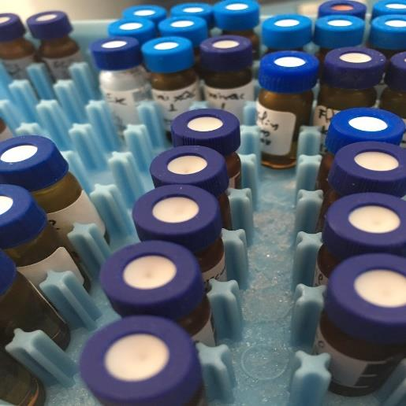
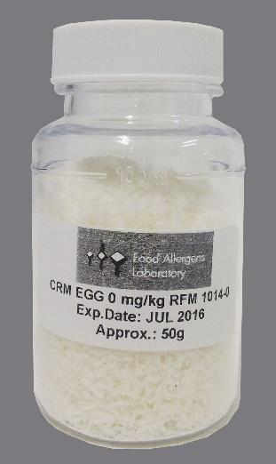
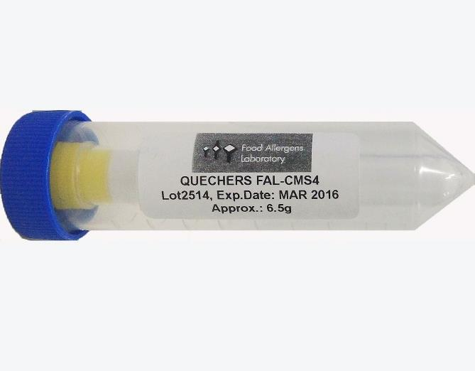
εικόνα 2:
τίτλος: Εξοπλισμός & Αναλώσιμα
Σύντομη περιγραφή: Προμηθεύουμε κάθε είδους εξοπλισμό και αναλώσιμα εργαστηρίων με
εξειδίκευση στα συστήματα ταχείας διάγνωσης μεγάλων και αξιόπιστων οίκων του εξωτερικού.
link σε υποκατηγορία μενού:
εικόνα 3:
τίτλος: Παραγωγή CRMs & QuEChERS
Σύντομη περιγραφή: Εξειδικευόμαστε στην παραγωγή πιστοποιημένων υλικών αναφοράς (CRM)
και κρίσιμων υλικών QuEChERS για τις ανάγκες επικύρωσης και διενέργειας διαφόρων μεθόδων
εργαστηριακών αναλύσεων.
link σε υποκατηγορία μενού:
εικόνα 4:
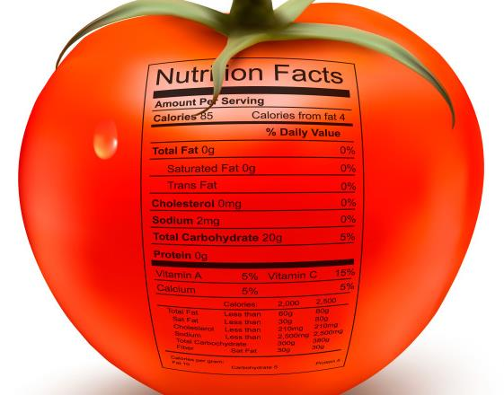
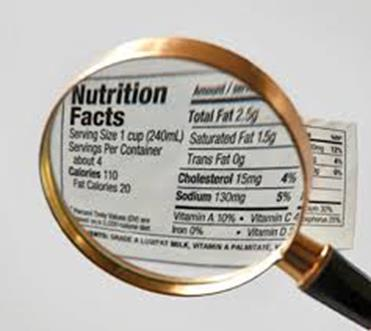
τίτλος: Έλεγχος Ετικετών
Σύντομη περιγραφή: Η υπηρεσία αυτή έγκειται στον έλεγχο της συμβατότητας των παρεχόμενων
πληροφοριών επισήμανσης με τις αντίστοιχες απαιτήσεις της ισχύουσας νομοθεσίας της χώρας
διάθεσης του προϊόντος.
link σε υποκατηγορία μενού:
εικόνα 5:
τίτλος: Εκπαιδεύσεις και Σεμινάρια
Σύντομη περιγραφή: Το εξειδικευμένο προσωπικό της Food Allergens Lab με υπερ20ετή εμπειρία
σε επαγγελματικές εκπαιδεύσεις αλλά και οι κατά περίπτωση προσκεκλημένοι εκπαιδευτές, είναι
σε θέση να σας προσφέρουν άρτια οργανωμένες υπηρεσίες εκπαίδευσης σε ένα ευρύ φάσμα
θεματολογίας με σεμινάρια που απευθύνονται τόσο σε εταιρίες και επαγγελματίες του χώρου
τροφίμων & ποτών όσο και σε ανεξάρτητους ιδιώτες και σπουδαστές.
link σε υποκατηγορία μενού:
εικόνα 6:
τίτλος: Υπηρεσίες Νομοθεσίας, Έρευνας και Ανάπτυξης
Σύντομη περιγραφή: Παρέχουμε πλήρη και επικαιροποιημένη υποστήριξη σε όλα τα θέματα νομοθεσίας
τροφίμων, ποτών και συμπληρωμάτων διατροφής, ενώ το άρτια εξειδικευμένο επιστημονικό μας
προσωπικό συμμετέχει σε πληθώρα ερευνητικών προγραμμάτων επιχειρήσεων τροφίμων και ιδρυμάτων
που αφορούν την ανάπτυξη νέων και καινοτόμων μεθόδων και προϊόντων.
link σε υποκατηγορία μενού:
2. ΕΤΑΙΡΙΑ
Προφίλ
Τα Food Allergens Laboratories, αποτελούνται από 4 ανεξάρτητα εργαστήρια δοκιμών, δύο στην Ελλάδα,
και ένα σε Κύπρο και Πολωνία. Η εταιρία εφαρμόζει διεθνώς αναγνωρισμένα συστήματα διαχείρισης της
ποιότητας σε συμμόρφωση με το πρότυπο EN ISO 9001. Οι πραγματοποιούμενες εργαστηριακές
αναλύσεις είναι σύμφωνες με το πρότυπο ISO 17025 και αναγνωρισμένες από τον ΕΣΥΔ με το πεδίο
διαπίστευσης να διευρύνεται διαρκώς τα τελευταία χρόνια. Το εργαστήριο είναι αναγνωρισμένο από το
Διεθνές Συμβούλιο Ελαιολάδου (COI), την Ευρωπαϊκή Ομοσπονδία Βιομηχανίας Ελαιοτριβείων (FEDIOL)
και από την Παγκόσμια Ομοσπονδία Γαλακτοκομικών Προϊόντων (FIL-IDF). Εκτός από την πραγματοποίηση
μεγάλου εύρους εργαστηριακών δοκιμών (χημικές, ανοσοχημικές, μοριακές και μικροβιολογικές), το
εργαστήριο δραστηριοποιείται παράλληλα στην εμπορία παντός είδους εξοπλισμού και αναλώσιμων
ελέγχου ποιότητας, τόσο για τις επιχειρήσεις τροφίμων και ιδιωτικών εργαστηρίων, όσο και για τις
ανάγκες ερευνητικών φορέων και εργαστηρίων παραγωγής καλλυντικών και συμπληρωμάτων διατροφής.
Ως αποκλειστικοί αντιπρόσωποι των διεθνούς φήμης και αξιοπιστίας οίκων του εξωτερικού (πχ Neogen,
Megazyme, Operon, Accumax, Biosan, Biomedal, Generon κα) εξειδικευόμαστε στα συστήματα ταχείας
διάγνωσης ποικίλων αναλυτικών παραμέτρων.
Στο εργαστήριο της Κύπρου, λειτουργεί τμήμα παραγωγής Πιστοποιημένων Υλικών Αναφοράς
(CRMs) και Ειδικών Μιγμάτων Αλάτων (QuEChERS) τα οποία και εμπορευόμαστε διεθνώς
καλύπτοντας τις ανάγκες διάφορων εργαστηρίων ποιοτικού ελέγχου των επιχειρήσεων τροφίμων
αλλά και λοιπών ιδιωτικών και δημόσιων αναλυτικών εργαστηρίων.
Ιστορία
Η εταιρία ιδρύθηκε το 2005 στο Ρέθυμνο της Κρήτης όπου και βρίσκεται το πρώτο εργαστήριο,
από τον Ανδρέα Βαρλάμο (Χημικός Μηχανικός ΕΜΠ, MSc Food QA Reading UK) με 15ετή εμπειρία
εκπαιδεύσεων και επιθεωρήσεων στον αγροδιατροφικό τομέα και τον Γιώργο Σειραγάκη
(Χημικός Τροφίμων MSc) με υπερεικοσαετή εμπειρία στο χώρο των τροφίμων.
Το δεύτερο εργαστήριο δημιουργήθηκε στο Ν. Ηράκλειο της Αθήνας στις αρχές του 2008 και
ακολούθησε η μετεγκατάστασή του στη Νέα Ιωνία στα τέλη του 2013 όπου και στεγάζεται μέχρι
σήμερα στον 4ο και 5ο όροφο της οδού Κ. Βάρναλη 40.
Στα τέλη του 2008 ξεκίνησε η λειτουργία του εργαστηρίου στα Λιβάδια της Κύπρου όπου εκτός
από τις εργαστηριακές αναλύσεις γίνεται και η παραγωγή και η διάθεση των CRMs και των
QuEChERS. Στις αρχές του 2016, έχοντας αυξημένη ζήτηση από βιομηχανίες τροφίμων της
κεντρικής Ευρώπης τόσο για αναλύσεις όσο και για CRM και QuEChERS, ξεκίνησε η λειτουργία της
πιο πρόσφατης μονάδας στη Βαρσοβία της Πολωνίας. Έχοντας ήδη αναπτύξει τις πρώτες
συνεργασίες στην αγορά που αφορούν κυρίως εργαστηριακές αναλύσεις αλλεργιογόνων και
υπολειμμάτων φυτοφαρμάκων αλλά και τη διάθεση εξιδεικευμένων κιτ ταχείας διάγνωσης.
Υποδομή
Τα εργαστήρια της Food Allergens Lab είναι εξοπλισμένα με τον πλέον υπερσύγχρονο εργαστηριακό
εξοπλισμό σε όλα τα επίπεδα λειτουργίας (πχ. LC-MS/MS, GC-MS/MS, HPLC, RP-HPLC, ICP-OES, GC-ECD,
GC-FID, UV-ViS, PCR, Real Time PCR, Εlisa Reader, Tissue Lyser, Soleris, ANSR κα). Φυσικά, η χρήση του
προαναφερθέντος εξοπλισμού απαιτεί την ύπαρξη εξειδικευμένου επιστημονικού προσωπικού τόσο για
την εξασφάλιση της ορθής λειτουργίας αυτών, όσο και για την κατάλληλη αξιολόγηση των
παραγόμενων αποτελεσμάτων και την πρόληψη τυχόν ανεπιθύμητων αλληλεπιδράσεων και λαθών.
Είμαστε υπερήφανοι για το υψηλό επιστημονικό επίπεδο του προσωπικού μας, το οποίο σε
συνδυασμό με την πολύ μεγάλη εργασιακή εμπειρία που διαθέτει και με δυνατότητα ανάλυσης
περισσότερων από 15.000 δείγματα κάθε χρόνο, το καθιστά μεταξύ των κορυφαίων στο χώρο των
αναλύσεων τροφίμων, των συμπληρωμάτων διατροφής και όχι μόνο. Απόδειξη του παραπάνω
ισχυρισμού αποτελεί η συνεχής συμμετοχή στελεχών της εταιρίας σε δραστηριότητες εθνικών και
ευρωπαϊκών οργανισμών όπως, EFSA, CEN, ΒΕUC, TEE, ΕΛΟΤ, ΕΣΥΔ, καθώς και η παρουσία τους σε
όλα τα κορυφαία διεθνή γεγονότα όπως εκθέσεις, συνέδρια κτλ.
Όραμα-Αποστολή-Αξίες
Φιλοσοφία μας είναι ότι ο έλεγχος ποιότητας αποτελεί βασική διεργασία στην διαδικασία της
δημιουργίας και διάθεσης προϊόντων που έχουν την ικανότητα να ικανοποιούν με διάρκεια τους
πελάτες και ως αποτέλεσμα να αποφέρουν συνεχώς τα αναμενόμενα κέρδη στις επιχειρήσεις.
Λειτουργούμε πάντα στη βάση των εγκαθιδρυμένων αρχών και αξιών μας που περιλαμβάνουν, την
αξιοπιστία των υπηρεσιών μας, την διαφάνεια των διαδικασιών και την εμπιστοσύνη σε όλες τις
μορφές των απαντούμενων συνεργασιών μας (προσωπικό, συνεργάτες, προμηθευτές και πελάτες).
Όραμά μας είναι να είμαστε η καλύτερη επιχείρηση στον τομέα και στο γεωγραφικό χώρο
δραστηριοποίησής μας, όσον αφορά τόσο την αξιοπιστία και την ταχύτητα των παρεχόμενων
υπηρεσιών, αλλά και το διαρκές τεχνοοικονομικό όφελος των πελατών μας προς όφελος, πελατών,
εταίρων και του προσωπικού των εργαστηρίων.
Αποστολή μας είναι η παροχή αξιόπιστων, οικονομικών και χρονικά έγκαιρων υπηρεσιών που να
ωφελούν και να ικανοποιούν απόλυτα τους πελάτες μας τόσο από τεχνική όσο και από οικονομική
προσέγγιση, παρέχοντας έγκυρες και πιστοποιημένες αναλύσεις, αξιόπιστα και ποιοτικά προϊόντα
καθώς και υψηλής ποιότητας συμβουλευτικές υπηρεσίες.
Η πολιτική ποιότητας διέπετε από μια σειρά αρχών για τις οποίες αγωνιζόμαστε καθημερινά:
- Εστίαση στον πελάτη (Κάλυψη των αναγκών-επιθυμιών, Λογική μετουσίωσης των υπηρεσιών
μας σε προστιθέμενη αξία, Αναζήτηση καινοτόμων λύσεων-επιλογών)
- Προτεραιότητα στην Ποιότητα (Παρεχόμενη ποιότητα σε όλα τα επίπεδα εστιάζοντας στην
παραγωγή έγκυρων και έγκαιρων αποτελεσμάτων και αξιόπιστων παραγόμενων υλικών)
- Κατανομή Αρμοδιοτήτων & Ομαδικό Πνεύμα (Ταλαντούχο, Εξειδικευμένο & Έμπειρο
Προσωπικό με συνεχόμενες εκπαιδεύσεις και αναγνωρισμένη επίδοση)
- Ακεραιότητα-Εμπιστευτικότητα (Οι ηθικές μας αρχές καθορίζουν όλες τις εμπορικές και
οικονομικές μας δραστηριότητες κερδίζοντας τον σεβασμό προσωπικού και πελατών)
Κοινωνική Εταιρική Ευθύνη
Στα εργαστήρια Food Allergens Labs, είμαστε δεσμευμένοι με τα υψηλότερα πρότυπα δεοντολογίας
κατά την διεξαγωγή των υπηρεσιών μας στα πλαίσια της γενικότερης κοινωνικής υπευθυνότητας.
Πρωταρχικό μας μέλημα είναι, η παροχή υπηρεσιών με επαγγελματισμό, η τήρηση των υποσχέσεων
ποιότητας προς όφελος των πελατών μας και έμμεσα της κοινωνίας, πάντα στη βάση της
νομιμότητας που απαιτείται για την διαχειριστική, χρηματοοικονομική, εργασιακή και
περιβαλλοντική τήρηση νόμων και κανόνων. H διατήρηση των ενδοεταιρικών μας σχέσεων στη βάση
των παραπάνω αρχών είναι κεντρικής σημασίας για την επίτευξη και συνεχής βελτίωσης της
ποιότητας των υπηρεσιών μας. Η φιλοσοφία, η αποστολή, οι αρχές και οι αξίες μας, οριοθετούν τη
δέσμευσή μας για επαγγελματική και ηθική συμπεριφορά διατηρώντας μας παράλληλα στα πλαίσια
συνεχούς ανάπτυξης και καινοτομίας.
3. ΥΠΗΡΕΣΙΕΣ-ΠΡΟΪΟΝΤΑ
Εργαστηριακές Αναλύσεις
Τα εργαστήρια μας σε Αθήνα, Ρέθυμνο, Λάρνακα και Βαρσοβία αλλά και οι συνεργασίες με μεγάλα
εργαστήρια του εξωτερικού (Γερμανία, Ολλανδία, Ιταλία) μας επιτρέπουν να καλύπτουμε όλο το εύρος
των ζητούμενων εργαστηριακών αναλύσεων σε υποστρώματα όπως Τρόφιμα & Ποτά (Φρούτα, Λαχανικά,
Όσπρια, Δημητριακά, Ξηρούς Καρπούς, Λάδι, Ελιές, Κρέας, Αλλαντικά, Γαλακτοκομικά, Άλευρα, Προϊόντα
Αρτοποιίας, Ζυμαρικά, Μέλι, Είδη Ζαχαροπλαστικής κ.α.), Ζωοτροφές, Νερά, Απόβλητα-Βιολογικοί
Καθαρισμοί, Εδάφη, Φύλλα, Φυτικοί Ιστοί και Συμπληρώματα Διατροφής.
Ενδεικτικά στον παρακάτω πίνακα αναφέρονται κάποιες από τις αναλύσεις που πραγματοποιούμε:
Προηγμένες Ανοσοχημικές και Μοριακές Τεχνικές
Εξειδικευμένη Ανίχνευση Υπολειμμάτων Αγροχημικών
(Αλλεργιογόνα, Αντιβιοτικά, GMOs, Μικροβιολογικά)
(Εντομοκτόνα, Ζιζανιοκτόνα, Βιοκτόνα)
Σύγχρονες Χρωματογραφικές Τεχνικές (Φθαλικοί
Ειδικές Φασματοχημικές Τεχνικές (Αμινοξέα, Βιταμίνες
Εστέρες, PHAs, Μυκοτοξίνες, Χρωστικές, Συντηρητικά) & Ιχνοστοιχεία, Βαρέα Μέταλλα, Πολυφαινόλες)
Διαθρεπτική Επισήμανση (ΕΕ, ΗΑΕ, ΗΠΑ, ΚΙΝΑ)
Εκτίμηση Διάρκειας Ζώης Προϊόντων (Shelf life)
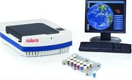
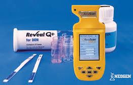
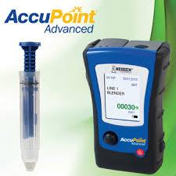
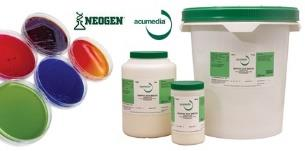
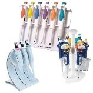
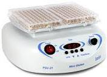
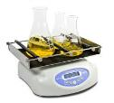
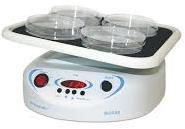
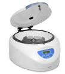
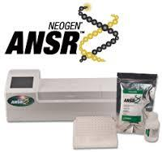
Νοθείες Τροφίμων, Συμπληρωμάτων & Zωοτροφών
Πακέτα Ποιοτικών Παραμέτρων
(Γαλακτοκομικά προϊόντα, Mέλι, Eλαιόλαδο, κα)
(Σετ Ελαιολάδου, Σετ Μελιού, Σετ Νερού)
Επιμολυντές (Ακρυλαμίδιο, Βαρέα Μέταλλα, Διοξίνες,
Ποιοτικά Χαρακτηριστικά Φυτικών Ειδών
Αμίνες, Ισταμίνη, Νιτρικά Οξέα)
(Αιθέρια Έλαια, Γυρεόκοκκοι, Αλοΐνη, Στεβιόλη)
Μετανάστευση Υλικών Συσκευασίας
Εδαφολογικές & Φυλοδιαγνωστικές Αναλύσεις
*Κάθε ανάλυση εντός των παρενθέσεων αποτελεί link όπου θα αναφέρεται, μέθοδος, υποστρώματα,
απαιτούμενη ποσότητα δείγματος, χρόνος, διαπίστευση κτλ. Καθώς και inquiry button…
Εξοπλισμός Ελέγχου Ποιότητας
Έχοντας εξασφαλίσει την αποκλειστική αντιπροσωπεία κορυφαίων οίκων στο χώρο της υγείας και της
ασφάλειας τροφίμων και ζωοτροφών ειξιδικεύομαστε σε μεθόδους ταχείας ανίχνευσης (kits)
προσφέροντας ιδανικές λύσεις στις απαιτητικές ανάγκες του Ποιοτικού Ελέγχου στις Βιομηχανίες
Τροφίμων. Επιπλέον μπορούμε να σας προσφέρουμε ολοκληρωμένες λύσεις τόσο στην εμπορία όσο και
στην εγκατάσταση και την εκπαίδευση εξειδικευμένου εργαστηριακoύ εξοπλισμού.
Ενδεικτικά μερικά από τα προϊόντα μας:
Accupoint Luminometer (Σύστημα Ελέγχου Υγιεινής)
Accuclean
(Έλεγχος Καθαριότητας Επιφανειών)
Stat-Fax 4700 (Φασματοφωτόμετρο Πολλαπλών
Veratox – Ποσοτικός Προσδιορισμός
Θέσεων)
(Αλλεργιογόνα, Μυκοτοξίνες, Τοξίνες)
Accuscan Gold (Γρήγορος Προσδιορισμός Μυκοτοξινών) Reveal Q+ - Ημιποσοτικός Προσδιορισμός
(Aflatoxin, Ochratoxin A, DON, ZEA)
Soleris
ANSR (Μοριακός Ανιχνευτής Παθογόνων
(Αυτόματος Μικροβιολογικός Αναλυτής 32/128 θέσεων) Μικροοργανισμών)
Biosan - Rockers, Shakers, Rotators
Accumax – Πιπέττες, Μικρο-πιπέττες,
falcons, tips, Εργαστηριακά Αναλώσιμα
Accumedia (Θρεπτικά Υποστρώματα)
Διακριβώσεις Οργάνων Μέτρησης
CRM
& QuEChERS
Στο εργαστήριο της Κύπρου λειτουργεί τμήμα παραγωγής Πιστοποιημένων Υλικών Αναφοράς (CRMs) τα
οποία χρησιμοποιούνται για τον ενδοεργαστηριακό έλεγχο των παραγόμενων αποτελεσμάτων από
ιδιωτικά και δημόσια εργαστήρια ελέγχου. Μερικά από τα κυριότερα είδη CRM εξυπηρετούν στην
τεκμηρίωση αναλύσεων όπως τα αλλεργιογόνα, τα βαρέα μέταλλα και οι μυκοτοξίνες. Παράλληλα τα
τελευταία χρόνια έχει προστεθεί και η παραγωγή Κρίσιμων Εργαστηριακών Αλάτων (QuEChERS) για την
κατάλληλη προετοιμασία των δειγμάτων πριν από την ανάλυσή τους καθιστώντας τις αναλύσεις
υπολειμμάτων φυτοφαρμάκων ευκολότερες, οικονομικότερες, ταχύτερες και πιο αξιόπιστες.
Εκτός από την Ελληνική αγορά τα παραπάνω προϊόντα έχουν εδραιωθεί μέσα από σταθερές συνεργασίες
που διατηρούμε με εργαστήρια του εξωτερικού σε χώρες όπως: Γαλλία, Γερμανία, Ελβετία, ΗΠΑ, Ιαπωνία,
Ισπανία, Ιταλία, Καναδά, Μαλαισία, Μεγάλη Βρετανία, Πολωνία, Φιλανδία κα.
CRMs (5-100ppm)
QuEChERS
Γλουτένη, Καρκινοειδή, Αραχίδες, Σόγια,
FAL CMS 2, FAL CMS 2A, FAL CMS 2B
Λακτόζη, Ξηροί καρποί, Αυγά, Ψάρια, Σέλινο,
MgSO4, PSA, NaCl, NaAcetate
Μουστάρδα, Σησάμι, Θειώδη, Λούπινο, Μαλάκια
Μυκοτοξίνες (Aflatoxins B1, B2, G1, G2, M1 –
FAL CMS 3, FAL CMS 3A, FAL CMS 3B
Ochratoxin A, DON, ZEA, Fumonisin, Patulin)
MgSO4, PSA, C18, GCB
Ιχνοστοιχεία (Ca, Mg, P, K, Fe, Mn, Se, Cu)
FAL CMS 4, FAL CMS 4A, FAL CMS 4B
Βαρέα Μέταλλα (Cd, Pb, As, Hg, Sn, Cr)
MgSO4, PSA, NaCl, C18, GCB, TCD, DHSQ
*Κάθε προιον θα αποτελεί link με φωτογραφία όπου θα αναφέρεται, σύσταση, ποσότητα, χρόνος αποστολής
κτλ. καθώς και inquiry button…
Υπηρεσία Ελέγχου Ετικέτας
Ένας από τους σημαντικότερους παράγοντες επικινδυνότητας των διακινούμενων τροφίμων είναι ετικέτα
τους. Οι κρατικοί φορείς με γνώμονα την προστασία του καταναλωτή έχουν αναπτύξει μια σειρά από
απαραίτητες προυποθέσεις αναγραφής πληροφοριών. Για την περαιτέρω διασφάλιση από τυχόν
παραπλανητικές ενδείξεις οι πληροφορίες αυτές ορίζεται από την εκάστοστε νομοθεσία ότι θα πρέπει να
αναγράφονται με αυστηρά συγκεκριμένο τρόπο. Με την πάροδο των χρόνων οι νομοθεσίες αυτές
προσαρμόζονται ή/και εξειδικεύονται σε συνάρτηση με τις κατηγορίες των διακινούμενων προϊόντων. Για
τον λόγο αυτό η εξασφάλιση της ορθότητας των αναγραφόμενων πληροφοριών στην πρωτογενή
συσκευασία τελικών προϊόντων τροφίμων δεν είναι απλή υπόθεση. Τα εργαστήρια της Food Allergens Lab
διαθέτοντας το πλέον εξειδικευμένο προσωπικό με τεράστια εμπειρία στο χώρο (περισσότεροι από 500
έλεγχοι ετικετών/έτος) είναι σε θέση να σας προσφέρουν τον νομικό έλεγχο της επισήμανσης επι της
συσκευασίας του προϊόντος σας, γρήγορα, εύχρηστα, αξιόπιστα και οικονομικά.
Εκπαιδεύσεις – Σεμινάρια
Η Food Allergens Lab αναλαμβάνει την οργάνωση και διεξαγωγή ενός ευρέως φάσματος
προγραμμάτων εκπαίδευσης. Τα σεμινάρια αυτά απευθύνονται κυρίως σε εταιρίες και
επαγγελματίες του χώρου τροφίμων, ποτών & ζωοτροφών καθώς και σε ιδιώτες που θέλουν να
διευρύνουν τις επιστημονικές τους γνώσεις. Το εργαστήριο της Κύπρου αποτελεί ένα από τα επίσημα
πιστοποιημένα κέντρα επαγγελματικής κατάρτισης (Κ.Ε.Κ.) της Κυπριακής Δημοκρατίας.
Οι εκπαιδεύσεις που οργανώνονται, αφορούν κυρίως την εξειδίκευση του προσωπικού επιχειρήσεων
τροφίμων και είναι προσαρμοσμένες στις ανάγκες πληροφόρησης συγκεκριμένων ομάδων και
διενεργούμενες από εκπαιδευτές με πολυετή επαγγελματική εμπειρία στον χώρο. πχ Εφαρμογή
Κανόνων Ορθής Υγιεινής Πρακτικής σε επιχειρήσεις τροφίμων, (βιομηχανίες τροφίμων, χώρους
μαζικής εστίασης (catering), εστιατόρια, ζαχαροπλαστεία, κλινικές, ξενοδοχεία, κατασκηνώσεις,
λιανικό εμπόριο).
ΘΕΜΑΤΟΛΟΓΙΑ ΣΕΜΙΝΑΡΙΩΝ ΕΠΙΜΟΡΦΩΣΗΣ ΑΠΟ ΕΞΕΙΔΙΚΕΥΜΕΝΟ ΠΡΟΣΩΠΙΚΟ
Ασφάλεια Τροφίμων – Πρόσθετα, Τοξίνες, Φυτοφάρμακα, Βαρέα Μέταλλα, Μικροοργανισμοί
Αλλεργιογόνα – Πρόληψη διασταυρούμενης μόλυνσης, εποπτεία & επικύρωση καθαρισμού
Επιμόλυνση Τροφίμων – Αναθεωρημένο νομικό πλαίσιο και μέθοδοι ανάλυσης
Υγιεινή Προσωπικού – Αξιολόγηση εξοπλισμού παραγωγής σε επαφή με τρόφιμα
Εργαστήριο Σχεδίασης & Ανάπτυξης Τροφίμων και καινοτόμων προϊόντων
Επικύρωση μεθόδων, Εκτίμηση αβεβαιότητας και συσχέτιση με το στάδιο της δειγματοληψίας
Στατιστικά εργαλεία αναλύσεων και εργαστηρίων ελέγχου ποιότητας
Αξιολόγηση, αποδοχή και διακρίβωση εργαστηριακού εξοπλισμού
Καταρτίσεις εσωτερικών ελεγκτών συστημάτων διαχείρισης ποιότητας στο εργαστήριο
Αντιμετώπιση προβλημάτων GMPs & GHPs. Εσωτερικές Επιθεωρήσεις
Έλεγχος ποιότητας υλικών συσκευασίας για τη βιομηχανία τροφίμων
Σεμινάρια Βασικής εκπ/σης προσωπικού εργαστηρίων & Εξειδικευμένων Τεχνικών σε Αναλυτές
Διαχείριση & Λειτουργία Εργαστηρίου Ελέγχου Τροφίμων. Υπηρεσίες Διαπίστευσης Μεθόδων.
Συστήματα Διαχείρισης της Ασφάλειας Τροφίμων FSSC 22000
Σύστημα αυτοελέγχου HACCP σύμφωνα με τις απαιτήσεις του ISO 22000 και βελτιστοποιήσεις.
Συστήματα Πιστοποίησης Τροφίμων – BRC (ver.7) & IFS (ver.6), Αρχές, Απαιτήσεις & Έλεγχοι
Εσωτερικοί επιθεωρητές και Επικεφαλείς συστημάτων αυτοελέγχου - ISO 22000, BRC, IFS
Αξιολόγηση Προμηθευτών για την αποτελεσματική διαχείριση κινδύνων – Επι τόπου Έλεγχοι
Επισήμανση και Νομοθεσία Τροφίμων (ΕΕ, ΗΠΑ, ΚΙΝΑ, ΗΑΕ) – Πρακτική Ερμηνεία Απαιτήσεων
Διαχείριση κρίσεων και ασφάλεια τροφίμων
Μικροβιολογία Τροφίμων (Δειγματοληψία, Κλασσικές και νέες ταχείες μέθοδοι)
Εργαστήριο αξιολόγησης εργαστηριακών μεθόδων και εκτίμηση της αβεβαιότητας μέτρησης
Οργανοληπτική αξιολόγηση τροφίμων - Απαιτήσεις, μέθοδοι και επαλήθευση δοκιμαστών
Νοθείες Τροφίμων & Διαχειριστικές Μέθοδοι (Ελαιόλαδο, Κρασί, Μέλι, Γάλα, Καφές, Τσάι, κα)
Υπηρεσίες Νομοθεσίας Τροφίμων, Έρευνας και Ανάπτυξης (R&D)
Με ενεργά μέλη σε πληθώρα διεθνών οργανισμών και ευρωπαϊκών επιτροπών βρισκόμαστε στην καρδιά
των εξελίξεων της νομοθεσίας προσφέροντάς σας διαρκή ενημέρωση και καθοδήγηση. Εκτός του ελέγχου
επισήμανσης αναλαμβάνουμε τη δημιουργία και κατάθεση φακέλων έγκρισης κυκλοφορίας προϊόντων
καθώς και διευκρινήσεις επιτρεπτότητας στη χρήση ισχυρισμών υγείας και διατροφής. Στα ίδια πλαίσια
παρέχουμε επιθεωρήσεις ασφάλειας τροφίμων 1ου και 2ου μέρους αλλά και καθοδήγησης στην
απόκτηση εμπορικών συμβόλων. Τέλος σε συνεργασία με επιχειρήσεις τροφίμων και ερευνητικών
ιδρυμάτων συμμετέχουμε στην υλοποίηση ερευνητικών δράσεων με ή χωρίς συμμετοχή σε
επιχορηγούμενα διεθνή προγράμματα.
4. NEA-ΔΡΑΣΤΗΡΙΟΤΗΤΕΣ
Νέα
Η εργαστηριακή ομάδα της Food Allergens Laboratory έχοντας πολυδιάστατη και συνεχή ενημέρωση μέσω
της συμμετοχής των μελών σε μεγάλο εύρος ερευνητικών και λοιπών ομάδων και δραστηριωτήτων είναι
σε θέση να σας κρατά ενήμερους σχετικά με τις τελευταίες εξελίξεις στο χώρο των τροφίμων. Έτσι, σε
εβδομαδιαία βάση προχωρά στη δημοσίευση ενημερωτικού ειδησεογραφικού δελτίου (newsletter) το
οποίο και αποστέλλεται σε ηλεκτρονική μορφή μέσω e-mail.
Οι ενδιαφερόμενοι μπορείτε ΕΓΓΡΑΦΕΙΤΕ ΣΤΟ NEWSLETTER μας πατώντας στον παραπάνω σύνδεσμο.
Δραστηριότητες
Στο αμέσως προσεχές διάστημα το εργαστήριό μας πρόκειται να συμμετάσχει στις παρακάτω εκθέσεις:
-
POLAGRA Food, International trade fair – Pozna, 26-29 September 2016
-
4ο Φεστιβάλ Ελληνικού Γάλακτος & Τυριού – Σ.Ε.Φ., 14-16 Οκτωβρίου 2016
-
SIAL International food exhibition - Paris, 16-20 October 2016
-
Olive Oil Festival - Warsaw, 28-29 October 2016
-
Fruit Logisitica - Berlin, 8-10 February 2017
-
Food Expo – Athens Metropolitan Expo, 18-20 Μαρτίου 2017
-
Artoza International trade fair for Bakery & Patisserie – Athens, 3-6 Μαρτίου 2017
-
Anuga Food Fair - Cologne, 11-15 October 2017
Διεθνή και Κρατικά Ερευνητικά Έργα
Τα εργαστήρια Food Allergens Labs, αναζητώντας συνεχώς την ανάπτυξη νέων μεθόδων και τεχνογνωσίας
στον τομέα Τροφίμων και ποτών, έχουν ολοκληρώσει με επιτυχία 14 ερευνητικά έργα σε συνεργασία με
κορυφαίους ερευνητικούς φορείς και ιδρύματα της Ευρωπαϊκής Ένωσης.
1. EUREKA ΔΙΑΚΡΑΤΙΚΟ ΕΛΛΑΔΑΣ-ΙΣΠΑΝΙΑΣ (ΕΙΕ)
΄΄Ανίχνευση και ταυτοποίηση της ποικιλίας Koroneiki (Olea Europea var. microcarpa alba), σε δείγματα
έξτρα παρθένου ελαιολάδου.΄΄
2. ΔΙΑΚΡΑΤΙΚΟ ΕΛΛΑΔΑΣ-ΙΣΠΑΝΙΑΣ- ΙΤΑΛΙΑΣ (ΕΤΑΤ)
΄΄International EQUAL Project in Food Section΄΄
3. ΠΑΒΕΤ ΝΕ (Ιατρική Σχολή Πανεπιστημίου Αθηνών)
΄΄Ανίχνευση Αλλεργιογόνων σε περιπτώσεις ασθενών με ανεξήγητες κλινικές εκδηλώσεις τροφικής
αλλεργίας.΄΄
4. ΔΙΑΚΡΑΤΙΚΟ ΕΛΛΑΔΑΣ-ΚΥΠΡΟΥ (Μεσογειακό Αγρονομικό Ινστιτούτο Χανίων & ΓΧΚ Κύπρου)
΄΄Ανάπτυξη μεθόδου μοριακής βιολογίας για προσδιορισμό αλλεργιογόνου πρωτεΐνης σησαμιού σε
τρόφιμα.΄΄
5. ΔΙΑΚΡΑΤΙΚΟ ΚΥΠΡΟΥ-ΡΟΥΜΑΝΙΑΣ (ΓΧΚ Κύπρου & Πανεπιστήμιο Βουκουρεστίου)
΄΄Ανάπτυξη ανοσοχημικής μεθόδου ανίχνευσης Αλλεργιογόνων και Αντιοξειδωτικών σε Οίνους.΄΄
6. INNOVATION VOUCHER (Γεωπονικό Πανεπιστήμιο Αθηνών)
΄΄ Προσδιορισμοί Πολυφαινολών και Λιποδιαλυτών Βιταμινών σε έλαια.΄΄
7. ΑΡΧΙΜΗΔΗΣ (Καθολικό Πανεπιστήμιο της Πορτογαλίας, ΤΕΙ Αθηνών)
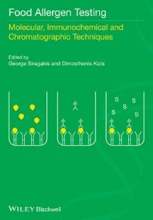
΄΄ Προσδιορισμοί Βιταμινών και Ιχνοστοιχείων σε Ελληνικά και Πορτογαλικά Τυριά.΄΄
8. ΙΔΡΥΜΑ ΠΡΟΩΘΗΣΗΣ ΕΡΕΥΝΑΣ (Πανεπιστήμιο Λευκωσίας & Γαλακτοκομείο Πίττας)
΄΄ Προσδιορισμός Ειδών Γάλακτος σε Χαλούμι με εξειδικευμένες μοριακές τεχνικές RT-PCR.΄΄
9. ΙΔΡΥΜΑ ΠΡΟΩΘΗΣΗΣ ΕΡΕΥΝΑΣ (ΓΧΚ Κύπρου, ΓΠΑ, ΤΕΙ Θεσσαλονίκης, Πανεπιστήμιο της Βιέννης)
΄΄ Ανάπτυξη καινοτόμου προϊόντος, Ψωμί Ελεύθερο Γλουτένης.΄΄
10. SEE-ERA.NET PLUS (NAGREF-GR, IMPR-SER, UKIM-FYR, FAZ-CRO)
΄΄ Conservation and Sustainable Exploitation of indigenous Medicinal and Aromatic plants traditionally used
in the SEE, WB countries. A model approach for Sideritis spp. (Mountain tea).΄΄
11. ΕΠΙΧΕΙΡΗΣΕΙΣ ΠΡΟΙΟΝ (ΓΧΚ Κύπρου & Πανεπιστήμιο Λευκωσίας)
΄΄ Ανάπτυξη Μεθόδων Ανίχνευσης Αλλεργιογόνων με Ανοσοχημικές και Μοριακές Τεχνικές.΄΄
12. ΑΠΑΣΧΟΛΗΣΗ (Food Allergens Laboratory)
΄΄ Ανάπτυξη Μεθόδων Ανίχνευσης Παθογόνων Μικροοργανισμών με Μοριακές Τεχνικές.΄΄
13. AURORA (NCSR Demokritos, H&S Technology Solutions SA, Theta Metrisis SA, Provirom Ltd)
΄΄Ολοκληρωμένη Οπτοηλεκτρονική Πλατφόρμα Πυριτίου Υπερυψηλής Ευαισθησίας για Επιτόπιες
Περιβαλλοντολογικές Αναλύσεις.΄΄
14. MARS FP7 (INRA-FR, UMIL-IT, UNIBO-IT, USAMVB-RO, FGI-BU, MKU-TUR, NAGREF-GR, CSIC-ESP,
MENDELU-CZE, ADNID-FR, CEPIS-FR, CRPV-IT, BETA-TUR, JUGLANS-BU, EFEVDSSL-ESP, KAR.I.F-GR)
΄΄ Marker Assisted Resistance to Sharka.΄΄
Συγγράμματα & Δημοσιεύσεις σε Διεθνή Επιστημονικά Περιοδικά
Στελέχη της εταιρίας μας έχουν στο ενεργητικό τους πληθώρα δημοσιεύσεων σε επιστημονικά περιοδικά
καθώς και εκδόσεις επιστημονικών συγγραμμάτων. Ενδεικτικά, μερικές από αυτές:
Title: ‘’Food Allergen Testing: Molecular, Immunochemical and Chromatographic Techniques’’
Editors: George Seiragakis, Dimosthenis Kizis
Contibutors: J.A. Rice, A.J. Lupo, T. Lau, M. Christofakis, A. Xila, K. Rizou, A.Bartos, J.
Leszcynska, I. Majak, R. Kokkinofta, A. Lampidonis, S. Tomoskozi, K. Torok, Z. Bugyi, L.
Hajas, Ch. Alexopoulos, E. Kakoulides, E. Lampi.
Publisher: Wiley-Blackwell, Feb 2014
ISBN: 978-1-118-51920-2
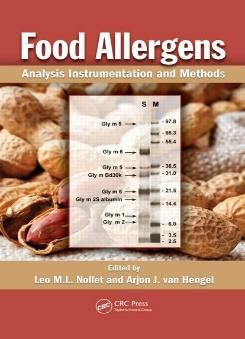
Title: ‘’Food Allergens: Analysis, Instrumentation and Methods’’
Editors: Leo M.L. Nollet, Arjon J. van Hengel
Contibutors: P.E. Johnson, A.I. Sancho, R.W. Crevel, E.C. Mills, C. Faeste, T. Holzhauser,
M. Roder, M. Steinhoff, A. Paschke-Kratzin, G. Seiragakis, D. Kizis, P.W. Lee, S. Taylor.
Publisher: CRC Press Taylor & Francis Group, Dec 2010
ISBN: 978-1-439-81503-8
G.E. Miliadis, P. Malatou, P. Tsiantas, A. Vrettakou, V.I. Evangelou, Ch. Anagnostopoulos, G. Seiragakis -
Carryover effect in pesticide residues analysis by LC-MS/MS, Hellenic Veterinary Medical Society Journal –
In press
Dimitra Tsantaki · G. Seiragakis - An EU health claim for olive oil polyphenols, New Food magazine –
19(1):17 · Feb 2016
Myers et al. - ''AOAC SMPR® 2016.004 Standard Method Performance Requirements for Quantitative
Measurement of β-Cryptoxanthin, Lutein, and Zeaxanthin in Ingredients and Dietary Supplements, FAL-
CRMs'', – Journal of AOAC International, (99):4, 1105 Aug 2016
G. Theodorou · G. Papadomichelakis · E. Tsiplakou · A. D. Lampidonis · S. Chadio · G. Zervas · I. Politis -
Effects of soyabean meal - or whey-based diets on lipid metabolism in weaned piglets - Journal of Animal
Physiology and Animal Nutrition 99(1):92 · Jun 2014
C. Anagnostopoulos · K. Liapis · S. Haroutounian · G.E. Miliadis - Development of an Easy Multiresidue
Method for Fat-Soluble Pesticides in Animal Products Using Gas Chromatography Tandem Mass
Spectrometry - Food Analytical Methods 7(1):205, · Jan 2014
Evangelou V., Bouga M., Emmanouel N, Perdikis D., Papadoulis G. - Discrimination of two natural biocontrol
agents in the Mediterranean region based on mitochondrial DNA sequencing data - Biochemistry Genetics
51(11-12):825 · Dec 2013
C. Anagnostopoulos · G.E. Miliadis - Development and validation of an easy multiresidue method for the
determination of multiclass pesticide residues using GC-MS/MS and LC-MS/MS in olive oil and olives -
Talanta 112(3):1, · Aug 2013
C. Anagnostopoulos · A. Bourmpopoulou · G.E. Miliadis - Development and Validation of a Dispersive Solid
Phase Extraction Liquid Chromatography Mass Spectrometry Method with Electrospray Ionization for the
Determination of Multiclass Pesticides and Metabolites in Meat and Milk - Analytical Letters 46(16): 2526, ·
Jun 2013
M. Metsoviti, K. Paraskevaidi, A. Koutinas, A.P. Zeng, S. Papanikolaou - Production of 1,3-propanediol, 2,3-
butanediol and ethanol by a newly isolated Klebsiella oxytoca strain growing on biodiesel-derived glycerol
based media - Process Biochemistry – 47(12):1872 · Dec 2012
E. Bempelou · K. Liapis · G.E. Miliadis - Validation of single residue methods for the determination of
dithiocarbamates and inorganic bromide residues in plant products - Hellenic Plant Protection Journal -
5(2): 57, · Jul 2012
E.Touloupakis · R.Gessman · K. Kavelaki · E.Christofakis · K. Petratos · D.F. Ghanotakis – Isolation,
characterization, sequencing and crystal structure of charybdin, a type I ribosome inactivating protein from
Charybdis maritima agg. - FEBS Journal - 273(12): 2684, · Jun 2012
C. J. Anagnostopoulos · G. Balagiannis · G.E. Miliadis - Comparison of Liquid and Gas Chromatographic Mass
Spectrometry for the Determination of Multiclass Pesticides at Low Concentrations - Spectroscopy Letters -
45(3):202 · Apr 2012
I. Politis · G. Theodorou · A.D. Lampidonis · A. Kominakis · A. Baldi - Short communication: Oxidative status
and incidence of mastitis relative to blood α-tocopherol concentrations in the postpartum period in dairy
cows - Journal of Dairy Science 95(12):7331 · Dec 2012
G. Seiragakis · M. Christofakis · E. Maistrou - Profile of Tocopherols in Greek Olives and Olive Oils, Annals of
Nutrition and Metabolism - 60(2):143, · Jan 2012
F. Hatjina, G. Tsoktouridis, M. Bougac, L. Charistos, V. Evangelou, D. Avtzis, I. Meeuse, M. Brunain, G.
Smagghe, D.C. de Graaf - Polar tube protein gene diversity among Nosema ceranae strains derived from a
Greek honey bee health study – Journal of Invertebrate Pathology 108(2):131 · Oct 2011
Bouga M., Evangelou V., Lykoudis D., Cakmak I., Hatjina F. - Genetic structure of Marchalina hellenica
(Hemiptera: Margarodidae) populations from Turkey: preliminary mtDNA sequencing data - Biochemistry
Genetics 49(11-12):683 · Dec 2011
Ch. Anagnostopoulos · P. Sarli · K. Liapis · S. Haroutounian · G.E. Miliadis - Validation of Two Variations of
the QuEChERS Method for the Determination of Multiclass Pesticide Residues in Cereal-Based Infant Foods
by LC–MS/MS - Food Analytical Methods 5(4): 664, · Aug 2011
Savvatianos S.· Giavi S. · Stefanaki E. · Seiragakis G. · Manousakis E. · Papadopoulos N.G. - Cow’s milk
allergens as an infrequent cause of anaphylaxis to systemic corticosteroids - Clinical and Transl Allergy
1(1):18, · Feb 2011
Vassilopoulou E. · Karathanos A. · Seiragakis G. · Giavi S. · Sinaniotis A. · Douladiris N. · Fernandez-Rivas M. ·
Clausen M. · Papadopoulos N.G. - Risk of allergic reactions to wine, in milk, egg and fish-allergic patients -
Clin Transl Allergy. 1(1):10, · Oct 2011
I. Politis · G. Theodorou · A.D. Lampidonis · R. Chronopoulou · A. Baldi - Soya protein hydrolysates modify
the expression of various pro-inflammatory genes induced by fatty acids in ovine phagocytes - The British
journal of nutrition – 108(7):1246 · Dec 2011
A.D. Lampidonis · G Theodorou · C Pecorini · R Rebucci · A Baldi · I Politis - Cloning of the 5 ' regulatory
regions and functional characterization of the core promoters of ovine PLAU (u-PA) and SERPIN1 (PAI-1) –
Gene 489(1):11 – Sept 11
G Theodorou · A.D. Lampidonis · G P Laliotis · I Bizelis · I Politis - Expression of plasminogen activator-
related genes in the adipose tissue of lactating dairy sheep in the early post-weaning period - Journal of
Animal Physiology and Animal Nutrition 96(3):403 · May 2011
A.D. Lampidonis · E. Rogdakis · G. Voutsinas · D.J. Stravopodis - The resurgence of Hormone-Sensitive
Lipase (HSL) in mammalian lipolysis - Gene 477(1-2):1 · May 2011
N. Vlastaras · E. Dasenakis · K.S. Liapis · G.E. Miliadis · C. Anagnostopoulos - Validation of a multiresidue
method for the determination of multiclass pesticides by using representative analytes by gas
chromatography - Hellenic Plant Protection Journal 3(2):57, · Jul 2010
C. Anagnostopoulos · P.Sarli · G.E. Miliadis · C. Haroutounian - Validation of the QuEChERS method for the
determination of 25 priority pesticide residues in cereal-based baby foods by gas chromatography with
electron capture and nitrogen phosphorous detection - Plant Protection Journal 3(2):71, · Jul 2010
K. Flampouri · S. Mavrikou · S. Kintzios · G.E. Miliadis · P. Sarlis - Development and validation of a cellular
biosensor detecting pesticide residues in tomatoes - Talanta 80(5):1799 · Mar 2010
C. Anagnostopoulos · G.E. Miliadis · K. Liapis · P. Sarlis - A multiresidue method for analysis of 56 pesticides
in peaches using liquid chromatography with tandem mass spectrometry detection - Hellenic Plant
Protection Journal 2(2):75 · Jul 2009
C. Anagnostopoulos · G.E. Miliadis - Method validation for the determination of pesticide residues in wheat
flour by gas chromatography - Hellenic Plant Protection Journal 2(1): 15 · Jan 2009
D. Stravopodis · P. Karkoulis · E. Konstantakou · S. Melachroinou · A.D. Lampidonis · D. Anastasiou · S.
Kachrilas · N. Messini-Nikolaki · I. Papassideri · G. Aravantinos · L. Margaritis · G. Voutsinas - Grade
dependent effects on cell cycle progression and apoptosis in response to doxorubicin in human bladder
cancer cell lines - International Journal of Oncology 34(1):137 · Feb 2009
G. Stefos · W. Becker · A.D. Lampidonis · E. Rogdakis - Cloning and functional characterization of the ovine
malic enzyme promoter - Gene 428(1-2):36 · Nov 2008
A.D. Lampidonis · D. Stravopodis · G. Voutsinas · N. Nikolaki · G. Stefos · L. Margaritis · A. Argyrokastritis · I.
Bizelis · E. Rogdakis - Cloning and functional characterization of the 5 ' regulatory region of ovine Hormone
Sensitive Lipase (HSL) gene - Gene 427(1-2):65 · Oct 2008
G.Siragakis · E. Christofakis – Pathogens in Food by PCR. A case study: Campylobacter in Poultry – BIO
Journal 26(51):51 · Sept 2008
A.D. Lampidonis · A. Argyrokastritis · D. Stravopodis · G. Voutsinas · T. Ntouroupi · L. Margaritis · I. Bizelis ·
E. Rogdakis - Cloning and functional characterization of the ovine Hormone Sensitive Lipase (HSL) full-
length cDNAs: An integrated approach - Gene 416(1-2):30 · Jul 2008
P. Dais · A. Spyros · S. Christophoridou · E. Hatzakis · G. Fragaki · A. Agiomyrgianaki · E. Salivaras · G.
Seiragakis · D. Daskalaki · M. Tasioula-Margari · M. Brenes - Comparison of analytical methodologies based
on 1H and 31P NMR spectroscopy with conventional methods of analysis for the determination of some
olive oil constituents - J. Agric. Food Chem., 55(1):577 · Apr 2007
D.T. Likas · N.G. Tsiropoulos · G.E. Miliadis - Rapid gas chromatographic method for the determination of
famoxadone, trifloxystrobin and fenhexamid residues in tomato, grape and wine samples - J Chromaogr -
1150(12):208 · May 2007
Ch. Anagnostopoulos · G.E. Miliadis · P. Sarlis · B. Ziogas - Comparison of external and internal standard
methods in pesticide residue determinations - International Journal of Environmental Analytical Chemistry -
86(1):77 · Jan 2006
P. Georgiou · K. Liapis · G.E. Miliadis · P. Siskos - Solidphase extraction cleanup of tomato samples for the
determination of pesticide residues by gas chromatography-electron capture detection - International
Journal of Environmental Analytical Chemistry - 86(1):69 · Jan 2006
N.G. Tsiropoulos · G.E. Miliadis · D. Likas · K. Liapis - Residues of Spiroxamine in Grapes Following Field
Application and Their Fate from Vine to Wine - Journal of Agricultural and Food Chemistry - 53(26):10091 ·
Jan 2006
K. Antonopoulos · Ν. Valet · D. Spiratos · G. Seiragakis - Olive oil and pomace olive oil processing – Grasas Y
Acetes 57(1):56 · Sept 2006
N. Papayannakos · C. Rakopoulos · S. Kyritsis · A. Lappas · A. Chatzigakis · G. Chlivinos · I. Liakopoulos · G.
Seiragakis - Pilot production and testing of bio-diesel produced from greek feedstocks – ECOS 1(12): 1489, ·
Jul 2006
G. Fragaki · A. Spyros · G. Seiragakis · E. Salivaras · P. Dais - Detection of extra virgin olive oil adulteration
with lampante olive oil and refined olive oil using NMR spectroscopy and multivariate statistical analysis - J.
Agric. Food Chem., 53(1):2810 · Nov 2005
N.G. Tsiropoulos · K. Liapis · D. Likas · G.E. Miliadis - Determination of spiroxamine residues in grapes, must,
and wine by gas chromatography/ion trap-mass spectrometry - Journal of AOAC International - 88(6):1834 ·
Nov 2005
G.E. Miliadis · K. Liapis · P. Malatou - International Journal of Environmental Analytical Chemistry -
84(1):193 · Jan 2004
P. Sarlis · G.E. Miliadis · K. Liapis · N.G. Tsiropoulos - A Gas Chromatographic Determination of Residues of
Eleven Insecticides and Two Metabolites on Olive Tree Leaves - Journal of AOAC International 87(1):146 ·
Jan 2004
Baritaki S., Zafiropoulos A., Sioumpara M., Politis M., Spandidos D.A., Krambovitis E. - Ionic interaction of
the HIV-1 V3 domain with CCR5 and deregulation of T lymphocyte function - Biochemical and Biophysical
Research Communications – 298(4):574 · Nov 2002
K.Liapis · G.E. Miliadis · N.G. Tsiropoulos - Confirmation of Pesticides in Water Samples by Mass
Spectrometry - Bulletin of Environmental Contamination and Toxicology - 65(6):811 · Jan 2001
P. Falaras · F. Lezou · G. Seiragakis · D. Petrakis - Bleaching properties of alumina-pillared acid-activated
montmorillonite - Clays and Clay Minerals 48(5):549, · Oct 2000
P. Falaras · I. Kovanis · F. Lezou · G. Seiragakis - Cottonseed oil bleaching by acid-activated montmorillonite
- Clay and Clay Minerals 34(2):221, · Jun 1999
N.G. Tsiropoulos · P. Sarlis · G.E. Miliadis - Evaluation of Teflubenzuron Residue Levels in Grapes Exposed to
Field Treatments and in the Must and Wine Produced from Them - Journal of Agricultural and Food
Chemistry 47(11):4583 · Dec 1999
P. Sarlis · G.E. Miliadis · N.G. Tsiropoulos - Dissipation of Teflubenzuron and Triflumuron Residues in Field-
Sprayed and Cold-Stored Pears - Journal of Agricultural and Food Chemistry 47(7):2926 · Aug 1999
G.E. Miliadis · N.G. Tsiropoulos · P. Sarlis - High-performance liquid chromatographic determination of
benzoylurea insecticides residues in grapes and wine using liquid and solid-phase extraction - Journal of
Chromatography A 835(1):113 · Apr 1999
N.G. Tsiropoulos · P.G. Aplada-Sarlis · G.E. Miliadis - Determination of benzoylurea insecticides in apples
and pears by solid-phase extraction cleanup and liquid chromatography with UV detection - Journal of
AOAC International 82(1):213 · Jan 1999
G.E. Miliadis · P. Malatou - Analysis of Pesticide Residues in Vegetables by Gas Capillary Chromatography -
International Journal of Environmental Analytical Chemistry 70(1):29 · May 1998
N.G. Tsiropoulos · G.E. Miliadis - Field Persistence Studies on Pendimethalin Residues in Onions and Soil
after Herbicide Postemergence Application in Onion Cultivation - Journal of Agricultural and Food
Chemistry - 46(1):291, · Feb 1998
G.E. Miliadis · P.A. Sarlis · K. Liapis - Disappearance of Tetradifon from Field-Sprayed Apricots and the
Apricot Juice Produced from Them - Journal of Agricultural and Food Chemistry 43(6):53 · June 1995
G.E. Miliadis · P.A. Sarlis · K. Liapis - Dissipation of pyrazophos residues in greenhouse tomatoes - Bulletin of
Environmental Contamination and Toxicology 53(6):883 · Jan 1995
K. Liapis · G.E. Miliadis · P.A. Sarlis - Persistence of monocrotophos residues in greenhouse tomatoes -
Bulletin of Environmental Contamination and Toxicology 53(2):303 · Sept 1994
P.A. Sarlis · K. Liapis · G.E. Miliadis - Study of Procymidone and Propargite Residue Levels Resulting from
Application to Greenhouse Tomatoes - Journal of Agricultural and Food Chemistry 42(7):1575 · Jul 1994
P.A. Sarlis · K. Liapis · G.E. Miliadis - Contamination of potato tubers and carrots in Greece with Lindane
residues - Bulletin of Environmental Contamination and Toxicology 52(1):135 · Feb 1994
G.E. Miliadis - Determination of pesticide residues in natural waters of Greece by solid phase extraction
and gas chromatography - Bulletin of Environmental Contamination and Toxicology 52(1):25 · Jan 1994
G.E. Miliadis · K. Liapis - Determination of arsenic residues in agricultural products of Milos island -
Analytica Chimica Acta 283(1):258 · Nov 1993
G.E. Miliadis - Gas chromatographic determination of pesticides in natural waters of Greece - Bulletin of
Environmental Contamination and Toxicology 50(2):247 · Mar 1993
P.G. Patsakos · K. Liapis · G.E. Miliadis · K. Zafiriou - Mancozeb residues on field sprayed apricots - Bulletin
of Environmental Contamination and Toxicology 48(5):756 · Jun 1992
G.E. Miliadis · P. Siskos · G. Vasilikiotis - Simplified cleanup and liquid chromatographic ultraviolet
determination of linuron and three metabolites in potatoes - Journal of AOAC Int. 73(3):435 · May 1990
Προσκεκλημένοι Ομιλητές σε Συνέδρια, Ημερίδες και Workshops
11th European Pesticide Residue Workshop, Limassol 2016
‘’Problems encountered in LC-MC/MS analysis for the determination of pesticide residues in food: solvent,
matrix and carry over effects’’, G.E. Miliadis
1st International Conference BACiF – Lodz, 2015
‘’Food Allergens Testing by Elisa & LC-MS/MS Techniques’’, G.Seiragakis
2nd EFSA’s Scientific Conference, ‘’Shaping the future of Food Safety, Together’’ – Milan 2015
‘’The importance of inspection in food safety assurance systems’’, A.Varlamos
2nd Farmer Expo Hellas, MEC – Athens 2015
‘’Agricultural Products Exports: Olive Oil Innovations, Honey Problems & Prospects’’, FAL Panel
1st Farmer Expo Hellas, MEC – Athens 2014
‘’Agricultural Products Imports from 3rd Countries: Pesticides Residues Testing Methods’’, FAL Panel
2nd Annual World Congress on Food Science and Technology – Hangzhou 2013
‘’Food Allergens by Immunoasay, PCR & Chromatography BITs’’, G.Seiragakis
2nd European Conference on Crop Protection, Hungry for Change, Brussels 2013
‘’Feedback on the presentation from the laboratory and consumer perspective and key points on the main
challenges in the area of pesticide residues in food’’, A.Varlamos
Τροφικές Αλλεργίες και Ευρωπαϊκός Κανονισμός 1169/2011,
A.Varlamos - Ημερίδα σε συνεργασία με την εταιρία Θεοδώρου Αυτοματισμοί ΑΒΕΤΕ, Αθήνα 2013
Καλλιέργειες αρωματικών & φαρμακευτικών φυτών στην Ελλάδα
A.Varlamos - Παρουσίαση στα πλαίσια της έκθεσης Ελαιοτεχνία, Αθήνα 2012
3rd MoniQA Congress – Varna 2011
‘’Determination of Allergens and Mycotoxins by ELISA spectrophotometric method’’, G.Seiragakis
2nd Congress of the European Alliance Health Allegations (EHCI), In Search of Solutions - Brussels, 2010
‘’A stakeholder dialogue on Art.13 Health Claim’’, A. Varlamos
BEUC view on DG Sanco Priorities within the next 5 years
A.Varlamos - DG SANCO Advisory Group - Brussels, 2010
11th Globalgap Tour Conference – Food Against Consumers, Athens 2009
‘’Food Analysis for residues of pesticides: current situation, challenges and perspectives’’, G.E. Miliadis
3rd Olivebioteq Int. Conference, Renovated Mediterranean Olive Growing Sector – Sfax Tunis, 2009
‘’Olive oil detection in special feedstuffs’’, G.Seiragakis
Investigating the consumer perception system on emerging technologies in the food area ILSI Workshop,
A.Varlamos - Emerging Technologies for Efficacy Demonstration – Brussels 2009
16th Greek Chemist’s Congress Food Chemistry Days, Food and Environment – Athens 2009
‘’Plant Pesticides Products, Legislation limits and Modern Analytical Techniques’’, G.E. Miliadis
1st International Conference on Biotechnology for the Wellness Industry – Kuala Lumpur 2008
‘’Olive Oil quality parameters and methods of testing’’, G.Seiragakis
14th Congress of Greek Chemist Organization – Athens 2007
‘’Pesticides Residue Testing in Food and Food Products’’, G.E. Miliadis
1st Conference on Quality and Safety meeting ISO 22000:2005 – Athens 2006
‘’Pesticide residues in food’’, G.E. Miliadis
3rd European Conference on pesticides and related organic micropollutants – Chalkidiki 2004
‘’Accreditation of pesticide residues laboratories by E.SY.D.’’, G.E. Miliadis
4th Intenational Congress of Clinical Oncology – Patra 2004
‘’Agricultural products testing for determine pesticide residues", G.E. Miliadis
3rd International Congress - Quality Forum – Athens 2003
‘’Food and water controls on pesticide residues’’, G.E. Miliadis
2nd European Conference on pesticides and relative organic micropollutants – Corfu 2002
‘’Assessment of the performance of 11 Greek laboratories through a proficiency test on the analysis of
grapes for the determination of pesticides residues", G.E. Miliadis
18th National Conference of Chemistry – Piraeus 2001
‘’Analysis of agricultural products and water to detect and identify pesticide residues concentration:
methodology and current situation in Greece’’, G.E. Miliadis
1st European Conference on pesticides and relative organic micropollutants – Ioannina 2001
‘’Pesticides residues in the environment - methodology in compliance with the European Union
legislation’’, G.E. Miliadis
3rd National Conference Greek Society of Nutrition and Food – Thessaloniki 1998
‘’Pesticide residues and food - water safety’’, G.E. Miliadis
1st National Meeting on Plant Protection – Larissa 1996
‘’Pesticide residues in agricultural products and surface waters in Greece’’, G.E. Miliadis
Παρουσιάσεις σε Εθνικά & Διεθνή Συνέδρια
5th International Congress Food from A to Z, Lodz 2016
‘’Rapid methods of analysis for the dairy sector’’, A. Abrozniak, G.Seiragakis
6th Ordinary Congress of Metrology, Athens 2016
‘’Determination of Mycotoxins in cereals by LC-MS triple quadrupole’’, P.Tsiantas, G.E. Miliadis
‘’Problems in Food Analysis using LC-MS triple quadrupole’’, G.E. Miliadis, P.Tsiantas, G.Seiragakis
‘’Carryover effect in Pesticides Analysis by LC-MS/MS’’, V.Evagelou, H.Anagnosotpoulos, G.E. Miliadis
11th European Pesticide Residue Workshop, Limassol 2016
‘’Problems encountered in LC-MC/MS analysis for the determination of pesticide residues in food: solvent,
matrix and carry over effects’’, G.E. Miliadis
1st International Conference BACiF – Lodz, 2015
‘’Food Allergens Testing by Elisa & LC-MS/MS Techniques’’, G.Seiragakis
2nd EFSA’s Scientific Conference, ‘’Shaping the future of Food Safety, Together’’ – Milan 2015
‘’The importance of inspection in food safety assurance systems’’, A.Varlamos
27th National Congress in Fruits & Vegetables Science – Volos, 2015
‘‘Pesticides determination in fruits & vegetables with LC-MS/MS’’, P.Tsiantas, G.Seiragakis, G.Miliadis
6th Greek Lipid Forum, NIR – Athens, 2015
‘’Determination of Aflatoxins in Greek vegetable oils’’, P.Tsiantas, F.Spithouraki, G.Seiragakis
7th International Symposium IDF – Limassol, 2015
‘’Food Allergens in Traditional Dairy Products of Cyprus’’, G.Seiragakis
1st National Quality Conference – Athens, 2014
‘’Food Standardization & Customer Satisfaction’’, A.Varlamos
6th Olivebioteq International Conference –Amman Jordan, 2014
‘’Reduction of acrylamide in potato chips using olive oil as frying mean. Immunoassay vs LC-MS/MS
techniques for acrylamide determination’’, G. Seiragakis, G.E. Miliadis
5th Greek National Metrology Conference - At NAGRIEF, Athens Greece, 2014
‘’Salmonella & Listeria Detection by molecular techniques’’, G. Seiragakis, A.D. Lampidonis
8th Conference in pesticides and related organic micropollutants in the environment – Ioannina, 2014
‘‘A new method for the simultaneous detrmination of 219 pesticides and 13 non dioxin like PCBs in water
using LC-MS/MS and GC/MS(n) systems’’, A. C. Charalampous, G.E. Miliadis, M. A. Koupparis
‘’Determination of acrylamide in low and high fat content food by different variations of the Quechers
method’’, A. Vrettakou, G. Miliadis, G. Siragakis
2nd European Conference on Crop Protection, Hungry for Change, Brussels 2013
‘’Feedback on the presentation from the laboratory and consumer perspective and key points on the main
challenges in the area of pesticide residues in food’’, A.Varlamos
EFSA EU Regulation Framework – Brussels 2013
‘’Risk-Benefits considerations in the area of botanicals’’, A.Varlamos
2nd Annual World Congress on Food Science and Technology – Hangzhou 2013
‘’Food Allergens by Immunoasay, PCR & Chromatography BITs’’, G.Seiragakis
4th National Conference on ‘’Biotechnology and Food Technology‘’ – Athens, 2013
‘’Molecular Techniques in Food Safety and Quality’’, ‘’Use of Greek Plants for the Reduction of Pathogens
levels in Meat and Meat Products’’, ‘’Detection of Foodborne Pathogens with the use of Molecular
Techniques (RT-PCR)’’, A.D. Lampidonis, M.Poilitis, V.Evangelou, G.Seiragakis
15th National Entomological Conference – Kavala, 2013
‘‘Food, water and pesticide residues’’, G.E. Miliadis
3rd Conference on Food Safety, Athens 2012
‘’Food Consumption & Chemical Occurrence data for dietary exposure assesment’’, A. Varlamos
15th International Meeting of Fat Soluble Vitamins – Kalabaka 2012
‘’ a-tocopherols in Greek olive varietes’’, G.Seiragakis
4th Ordinary National Congress of Metrology – Athens, 2012
‘’Development and validation of a multiresidue pesticides determination method using GC-MS/MS and LC-
MS/MS in olive oil’’, H. Anagnostopoulos, G.E. Miliadis, G. Foteinopoulou, K. Liapis
‘’Development and validation of the method for the determination of pesticide residues in water by
techniques LC-MS/MS and GC-MS/MS’’, A. C. Charalampous, G.E. Miliadis, M. A. Koupparis
3rd Joint Workshop of the EURLs, NRLs & OFLs for Pesticide Residues in Food and Feed, Freiburg 2011
‘’Pesticide residues in vineleaves’’, G.E. Miliadis, P. Malatou, D. Vlahos
3rd MoniQA Congress – Varna 2011
‘’Determination of Allergens and Mycotoxins by ELISA spectrophotometric method’’, G.Seiragakis
61st Annual Meeting of the European Association for Animal Production - Heraklion, 2011
‘’Reproductive characteristics of pig farms in the region of Epirus, Greece’’, A.D. Lampidonis et. al.
4th National Food Conference - Thessaloniki, 2011
‘‘Validation and study uncertainty specialized dithiocarbamate fungicide residues assays and inorganic
bromide in vegetable products’’, E. Bebelou, K. Liapis, G.E. Miliadis,
‘’Validation of a variation of QuEChERS method for the determination of pesticide residues in the oil using
gas chromatography’’, M.Spantidaki, H. Anagnostopoulos, G.E. Miliadis, K. Liapis
‘’Development and validation of a rapid and selective residue assay of plant protection products using GC-
MS/MS and LC-MS/MS in milk’’, H. Anagnostopoulos, K. Liapis, S. Haroutounian, G.E. Miliadis
4th International Congress Biotechnology and Food Technology – Athens, 2010
‘’Traceability in the Food Industry: Conditions to avoid crisis’’, G.Seiragakis
2nd Congress of the European Alliance Health Allegations (EHCI), In Search of Solutions - Brussels, 2010
‘’A stakeholder dialogue on Art.13 Health Claim’’, A. Varlamos
3rd Olivebioteq Int. Conference, Renovated Mediterranean Olive Growing Sector – Sfax Tunis, 2009
‘’Olive oil detection in special feedstuffs’’, G.Seiragakis
11th Globalgap Tour Conference – Food Against Consumers, Athens 2009
‘’Food Analysis for residues of pesticides: current situation, challenges and perspectives’’, G.E. Miliadis
3rd International Congress Biotechnology and Food Technology – Rethymno 2009
‘’Identification of olive oil to feed enriched with molecular techniques’’, G. Seiragakis
16th Greek Chemist’s Congress Food Chemistry Days, Food and Enviroment – Athens 2009
‘’Plant Pesticides Products, Legislation limits and Modern Analytical Techniques’’, G.E. Miliadis
3rd National Food Biotechnology Congress – Athens 2009
‘’Comparison of ELISA and PCR techniques for the detection of allergens in food’’, M.Kapoti, E.Politis
‘’Detection of four major pathogens (Bacillus cereus, Salmonella, Campylobacter spp. and Staphylococcus
aureus) in their commonly found substrates’’, M.Christofakis, D. Kizis, G. Seiragakis
‘’Vibrio parahaemolyticus in seafood by RT-PCR’’, D. Kizis, A. Pourikkou, G. Seiragakis
1st Mediterranean Summit of World Science Poultry Association – Chalkidiki 2008
‘’Rapid testing for Campylobacter spp. in poultry, PCR advantages’’, M.Christofakis, G. Seiragakis
1st International Conference on Biotechnology for the Wellness Industry – Kuala Lumpur 2008
‘’Olive Oil quality parameters and methods of testing’’, G.Seiragakis
2nd International Lipid Forum Congress – Athens 2007
‘’Effects of harvesting techniques on PAHs existence in EVOO’’, C. Antoniou & G.Seiragakis
3rd International Symposium on Recent Advances in Food Analysis – Prague 2007
‘’Adulteration of Extra Virgin Olive Oil’’, G.Seiragakis
15th Congress of Greek Chemist Organization – Athens 2007
‘’Pesticides Residue Testing in Food and Food Products’’, G.E. Miliadis
1st Conference on Quality and Safety meeting ISO 22000:2005 – Athens 2006
‘’Pesticide residues in food’’, G.E. Miliadis
29th International Symposium on Capillary Chromatography - Riva del Garda 2006
‘’Famoxadone, Trifloxystrobin and Fenhexamide Determination in Agricultural Commodities by Gas
Chromatography using NPD, ECD and MS Detector’’, Likas D., Tsiropoulos N.G., Liapis K., Miliadis G.E.
3rd European Conference on pesticides and related organic micropollutants – Chalkidiki 2004
‘’Accreditation of pesticide residues laboratories by E.SY.D.’’, G.E. Miliadis
16th International Instrumental Analysis Conference, Modern Trends & Applications, Thessaloniki 2003
‘’Determination of thiabendazole residues by LC-DAD and fluorescence detection. Μonitoring of
thiabendazole residues in potatoes and bananas’’, Sarlis P., Tsiropoulos N.G., Liapis K., Miliadis G.E.
4th European Pesticide Residues Workshop: Pesticides in food and drink – Rome 2002
‘’Determination 34 priority pesticides residues in water samples by GC-MS’’, G.E. Miliadis, P.Malatou
Ημερίδες, Ενημερωτικά Άρθρα & Workshops
G. Seiragakis - ''Ισχυρισμοί διατροφής & υγείας για συστατικά του εξαιρετικού παρθένου ελαιόλαδου:
Πολυφαινόλες και Τοκοφερόλες'', Ελαιοπαραγωγή 2016 - In press
G. Seiragakis - ''Ισχυρισμοί διατροφής & υγείας για τα συστατικά του Κυπριακού μελιού: Ριβοφλαβίνη και
Μαγγάνιο'', Κυπριακή Μελισσοκομία - In press
V.Evagelou, G. Seiragakis - ''Μέλι Χαρουπιάς, Ποιοτικά Χαρακτηριστικά και Προοπτικές'', Κυπριακή
Μελισσοκομία - 16 (5):37 · May 2016
G. Seiragakis - ''Εργαστηριακές Αναλύσεις Βιοδραστικών Συστατικών σε Συσκευασμένα Τρόφιμα προς
Τεκμηρίωση Ισχυρισμών Υγείας'', All Pack Hellas - 72 (1):36 · Feb 2016
Παρουσίαση των Κριτικών Υλικών Αναφοράς FAL-QuEChERs στα πλαίσια της υπηρεσίας Spotlight
G. Seiragakis – Fruchthandel Magazine (3):17, Berlin 2016
Accurate Tests & Laboratory Equipment for Quality Control (FAL QuEChERs & CRMs)
N. Galanis – Middle East Food Magazine (3):34, Beirut 2016
Ταχείες Μικροβιολογικές Τεχνικές με τη Xρήση Εξειδικευμένου Εξοπλισμού,
Frederic Martinez – 1st Neogen Europe Workshop on Rapid Food Safety Solutions, Athens 2016
Εργαστηριακές Αναλύσεις Βιοδραστικών Συστατικών προς Τεκμηρίωση Ισχυρισμών Υγείας,
G. Seiragakis – Ημέρες Χημείας Τροφίμων (Λειτουργικά Τρόφιμα), Αθήνα 2015
Εργαστηριακές αναλύσεις για εξαγωγές μελιού σε Ε.Ε., USA, Καναδά, Ιαπωνία και λοιπές τρίτες Χώρες,
G. Seiragakis – Στρογγυλή Τράπεζα με θέμα εξαγωγές μελιού, Πειραιάς 2015
Τροφικές Αλλεργίες και Ευρωπαϊκός Κανονισμός 1169/2011,
A.Varlamos - Ημερίδα σε συνεργασία με την εταιρία Θεοδώρου Αυτοματισμοί ΑΒΕΤΕ, Αθήνα 2013
Καλλιέργειες αρωματικών & φαρμακευτικών φυτών στην Ελλάδα
A.Varlamos - Παρουσίαση στα πλαίσια της έκθεσης Ελαιοτεχνία, Αθήνα 2012
Identification of Unknown Compounds by Using LC/TOF-MS
G.E. Miliadis, Liapis K. – Ημερίδα Ελληνικής Εταιρείας Φασματομετρίας Μάζας, Αθήνα 2011
BEUC view on DG Sanco Priorities within the next 5 years
A.Varlamos - DG SANCO Advisory Group - Brussels, 2010
Αλλεργιογόνα τρόφιμα: Συνήθεις περιπτώσεις επιμόλυνσης κατά την παραγωγική διαδικασία.
G.Seiragakis – Ημερίδα Ασφάλειας Τροφίμων του ΤΕΙ Αθήνας, 2010
Βιολειτουργικά συστατικά στο Παρθένο ελαιόλαδο
G. Seiragakis – Cyprus Food&Drink Magazine (7):34, 2010
Πολυκυκλικοί Αρωματικοί Υδρογονάνθρακες στο Παρθένο Ελαιόλαδο
G. Seiragakis – Cyprus Food&Drink Magazine (5):25, 2009
Investigating the consumer perception system on emerging technologies in the food area ILSI Workshop,
A.Varlamos - Emerging Technologies for Efficacy Demonstration – Brussels 2009
Ταχείες Μέθοδοι Ανάλυσης Αλλεργιογόνων, Μυκοτοξινών, ΓΤΟ και Παθογόνων Μικροοργανισμών
G.Seiragakis - Ημερίδα σε συνεργασία με το Αριστοτέλειο Πανεπιστήμιο και το ΕΘ.Ι.ΑΓ.Ε., Αθήνα 2008
Οργανοληπτική Αξιολόγηση Ελαιολάδου
G.Seiragakis – Περιοδικό Ελαιόκοσμος (1):45, 2008
Ανοσοχημικές Μέθοδοι Προσδιορισμού Νοθείας στο Ελαιόλαδο
G.Seiragakis – Περιοδικό Ελαιόκοσμος (1):49, 2008
Ο Κανονισμός 1881/2006 για ανώτατα όρια χημικών επιμολυντών στο κρέας.
G. Seiragakis – FOOD TECHnology Magazine (3):30, 2007
Επίδραση των διαδικασιών διήθησης του παρθένου ελαιόλαδου στην παρουσία επιμολυντών
G. Seiragakis, I.Sarigiannis – Hμέρες Χημείας Τροφίμων ΕΕΧ, Θεσ/νίκη 2006
Νομοθετικές Απαιτήσεις για επισήμανση αλλεργιογόνων στα τυποποιημένα τρόφιμα.
G. Seiragakis – All-Pack Magazine (12):34, 2006
Ανοσοχημικές μέθοδοι για προσδιορισμό φουντουκέλαιου σε ελαιόλαδο,
G. Seiragakis – BioFood Magazine (12):110, 2005
Εκθέσεις
Τα εργαστήρια της Food Allergens Lab έρχονται σε άμεση διαπροσωπική επαφή και επικοινωνία με πελάτες,
συνεργάτες, επαγγελματίες και λοιπούς οργανισμούς στο χώρο των τροφίμων, ενημερώνοντας σας τα
τελευταία νέα και εξελίξεις υποστηρίζοντας τυχόν ανησυχίες σας.
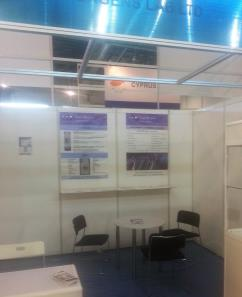
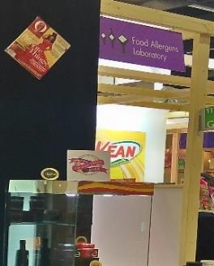
Επιπλέον των παραπάνω σχέσεων, τα στελέχη της εταιρίας συμμετέχουν σε αρκετές εθνικές και διεθνείς
εκθέσεις στον κλάδο των Τροφίμων, προκειμένου να μεταφέρουν τις γνώσεις τους και να εξηγήσουν τις
προτάσεις τους.
25η Διεθνής Έκθεση Φρούτων και Λαχανικών, Fruit Logistica BASF – Berlin, 2017
26η Διεθνής Έκθεση Τροφίμων, SIAL – Paris, 2016
3ο Φεστιβάλ Κρασιού και Ελαιολάδου, Oil Festival & Wine Expo – Warsaw, 2016
4ο Φεστιβάλ Γάλακτος και Τυριού, Agro Quality – Athens, 2016
7η Διεθνής Έκθεση POLAGRA-TECH – Poznan, 2016
4η Διεθνής Έκθεση Free From Food – Amsterdam, 2016
20η Διεθνής Έκθεση Τροφίμων και Ποτών Food Asia – Singapore, 2016
3η Διεθνής Έκθεση Τροφίμων και Ποτών Food Expo – Athens, 2016
24η Διεθνής Έκθεση Φρούτων και Λαχανικών, Fruit Logistica BASF – Berlin, 2016
20η Διεθνής Έκθεση Τροφίμων, ANUGA – Cologne, 2015
9η Διεθνής Έκθεση Φρούτων και Λαχανικών, Fruit Attraction IFEMA – Madrid, 2015
26η Διεθνής Έκθεση Τροφίμων, GULFOOD – Dubai, 2015
3η Διεθνής Έκθεση Free From Food – Barcelona, 2015
23η Διεθνής Έκθεση Φρούτων και Λαχανικών, Fruit Logistica BASF – Berlin, 2015
1η Μεσογειακή Έκθεση Ελιάς και Ελαιολάδου, Elaiotechnia – Athens, 2015
7ο Φεστιβάλ Ελληνικού Μελιού & Προϊόντων Μέλισσας – Peiraus, 2015
25η Διεθνής Έκθεση Τροφίμων, SIAL – Paris, 2014
23η Διεθνής Έκθεση Τροφίμων, Ποτών, Μηχανημάτων& Εξοπλισμού, DETROP – Thessaloniki, 2014
19η Διεθνής Έκθεση Τροφίμων, ANUGA – Cologne, 2013
3η Διεθνής Έκθεση Τροφίμων, Ποτών, Αρτοποιίας και Ζαχαροπλαστικής ARTOZA – Crete, 2012
5. ΠΙΣΤΟΠΟΙΗΣΕΙΣ, ΔΙΑΠΙΣΤΕΥΣΕΙΣ, ΕΓΚΡΙΣΕΙΣ & ΑΝΑΓΝΩΡΙΣΕΙΣ
ISO
Τα εργαστήρια δοκιμών της Food Allergens Lab είναι διαπιστευμένα κατά ISO 17025 για τη διεξαγωγή
πλήθους αναλυτικών παραμέτρων σε συγκεκριμένα υποστρώματα με βάση αυστηρά προκαθορισμένα
πρωτόκολλα διαφόρων μεθόδων. Για την περαιτέρω διασφάλιση της αξιοπιστίας και της εγκυρότητας των
παραγόμενων αποτελεσμάτων η συμμετοχή σε διεργαστηριακά σχημάτα ελέγχου ικανότητας (ΓΧΚ & άλλα
εργαστήρια) είναι συνεχής με πολύ υψηλά ποσοστά επιτυχίας/ταυτοποίησης των αποτελεσμάτων.
Επιπρόσθετα, εκτός των εργαστηριακών αναλύσεων διαθέτουμε πιστοποίηση κατά ISO 9001:2008 για την
εμπορία εξοπλισμού και αναλωσίμων ποιοτικού ελέγχου αλλά και για την παραγωγή και διάθεση κρρίσιμων
(QuEChERS), πιστοποιημένων υλικών αναφοράς (CRMs) και ELISA κιτς. Η διοργάνωση και διενέργεια
εκπαιδευτικών σεμιναρίων γίνεται επίσης κάτω από τις απαιτήσεις του παραπάνω προτύπου
προσφέροντας ένα άρτιο σταθερό και υψηλής ποιότητας αποτέλεσμα.
ΕΣΥΔ
Η πιστοποίηση σύμφωνα με το πρότυπο ποιότητας ΕΛΟΤ ΕΝ ISO/IEC 17025:2005 απαιτεί την διενέργεια
εξωτερικών ελέγχων από ανεξάρτητους κρατικούς ή άλλους φορείς για την διατήρηση της αξιοπιστίας του
όλου συστήματος. Η παραπάνω ενέργεια αποτελεί τη λεγόμενη διαπίστευση ενός συστήματος και στην
περίπτωσή εργαστηρίων αναλυτικών δοκιμών αρμόδια αρχή είναι το Εθνικό Σύστημα Διαπίστευσης (ΕΣΥΔ).
Τα επίσημα πεδία εφαρμογής της διαπίστευσης των εργαστηρίων της FOOD ALLERGENS LAB σε Αθήνα και
Κρήτη είναι διαθέσιμα στον ηλεκτρονικό ιστότοπο του ESYD και ανανεώνονται συνεχώς μετά από τις
απαραίτητες επιθεωρήσεις καταλληλόλητας. Τα τελευταία χρόνια το εύρος του πεδίου διαπίστευσης των
εργαστηρίων αυξάνεται γεωμετρικά αποτυπώνοντας με τον καλύτερο δυνατό τρόπο την ανοδική πορεία
των εργαστηρίων της Food Allergens Lab ακόμα και μέσα στην περίοδο της οικονομικής κρίσης.
ΕΟΦ
Από τον Δεκέμβριο του 2015 και μετά της απαραίτητες προαπαιτούμενες επιθεωρήσεις, ο Εθνικός
Οργανισμός Φυτοφαρμάκων προχώρησε στη χορήγηση άδειας διενέργειας μικροβιολογικών, χημικών και
ανοσοχημικών δοκιμών σε συμπληρώματα διατροφής στο εργαστήριο της Ν.Ιωνίας στην Αθήνα (ΑΠ:
78486). Η άδεια αυτή αναφέρεται σε όλες τις μορφές διάθεσης των παραπάνω προϊόντων όπως, δισκία,
σιρόπια και κάψουλες. Συμπληρωματικά, το νομικό τμήμα της εταιρίας αναλαμβάνει τόσο τη σύσταση και
την κατάθεση των απαραίτητων φακέλων κυκλοφορίας για τα παραπάνω προϊόντα, καθώς και την
διενέργεια των απαραίτητων εργαστηριακών δοκιμών (Διαθρεπτικά στοιχεία επισήμανσης, Challenge Test,
Αλλεργιογόνα κ.α). Τέλος, ο ΕΟΦ έχει προχωρήσει στο διορισμό υπεύθυνου χημικού επιστήμονα για το
εργαστήριο των Αθηνών.
FEDIOL
Η Fediol είναι η επίσημη Ομοσπονδία που εκπροσωπεί την Ευρωπαϊκή Βιομηχανία Φυτικών Ελαίων και
Πρωτεϊνούχων Τροφών σε όλα τα κράτη μέλη της Ε.Ε. Αποτελείται από περισσότερες από 35 εταιρίες σε 17
χώρες της Ε.Ε., που δραστηροποιούνται στους τομείς της επεξεργασίας, της παραγωγής και της εμπορίας
ελαιούχων σπόρων και φυτικών ελαιών. Τα εργαστήρια της Food Allergens Laboratory είναι αναγνωρισμένα
από την ομοσπονδία αυτή για τη διενέργεια εργαστηριακών αναλύσεων σε ακατέργαστα και
επεξεργασμένα φυτικά έλαια πραγματοποιώντας πληθώρα δοκιμών κάθε χρόνο.
FIL-IDF
Η Διεθνής Ομοσπονδία Γάλακτος (IDF) αντιπροσωπεύει τον παγκόσμια γαλακτοκομικό τομέα και
εξασφαλίζει ότι η πλέον σύγχρονες επιστημονικές γνώσεις και πρακτικές χρησιμοποιούνται για την
παραγωγή ποιοτικού γάλακτος υψηλής θρεπτικής αξίας και ασφαλών και βιώσιμων γαλακτοκομικών
προϊόντων. Η Food Allergens Lab ως αναγνωρισμένο εργαστήριο από την ομοσπονδία, συμβάλλει
εμπράκτως στην αποστολή για την παραγωγή και διάθεση ασφαλών γαλακτοκομικών προϊόντων και
γάλακτος, πραγματοποιώντας καθημερινά έγκυρες και αξιόπιστες αναλύσεις πολλών παραμέτρων.
IOC
Το Διεθνές Συμβούλιο Ελαιολάδου είναι ο μοναδικός παγκόσμιος οργανισμός διεπαφής και πληροφόρησης,
παραγωγών, εμπόρων και καταναλωτών ελαιολάδου και επιτραπέζιων ελιών. Εκτός από την παραγωγή και
επεξεργασία οικονομικών στοιχείων και αξιολογήσεων, ο οργανισμός διαθέτει εξειδικευμένο τεχνικό τμήμα
και επιστημονικό προσωπικό διαμέσου του οποίου έχει αναπτύξει επι μέρους ποιοτικά στάνταρντ και
επίσημες μεθόδους ανάλυσης για τον έλεγχο αυτών. H Food Allergens Laboratory μετά από συνεχόμενη
5ετή αποδοχή για τη διενέργεια εργαστηριακών αναλύσεων σε ελιές, ελαιόλαδο και ελαιοκομικά προϊόντα,
εξακολουθεί να αποτελεί υπερήφανο μέλος του IOC.
FRUITMONITORING (HDE LIST)
Από τα τέλη Οκτωβρίου τα εργαστήρια Food Allergens Labs βρίσκονται μεταξύ των 98 εγκεκριμένων
εργαστηρίων παγκοσμίως, στην εμπορική λίστα υπηρεσιών HDE του fruitmonitoring.com για τον έλεγχο της
υπολειμματικότητας φυτοφαρμάκων σε Φρούτα και Λαχανικά που διακινούνται εντός της ΕΕ. Με το
ευέλικτο πεδίο διαπίστευσης που διαθέτουμε στον τομέα αυτό έχουμε ετοιμάσει ειδικά πακέτα δραστικών
ουσιών (εώς και 550) έτσι ώστε να ανταποκρίνονται στις εκάστοτε ανάγκες των πελατών ανάλογα το προϊόν.
Δ.Σ.Δ.Ι.
Τα εργαστήρια της Food Allergens Laboratory, τηρώντας τη δέσμευσή τους για παραγωγή και διάθεση
έγκυρων και αξιόπιστων υπηρεσιών, εκτός από τα ισχύοντα πιστοποιητικά ποιότητας και τις σχετικές
διαπιστεύσεις των μεθόδων ανάλυσης που διαθέτουν, διενεργούν παράλληλα και διεργαστηριακές δοκιμές
για την περαιτέρω διασφάλιση της ορθότητας των παραγόμενων αποτελεσμάτων.
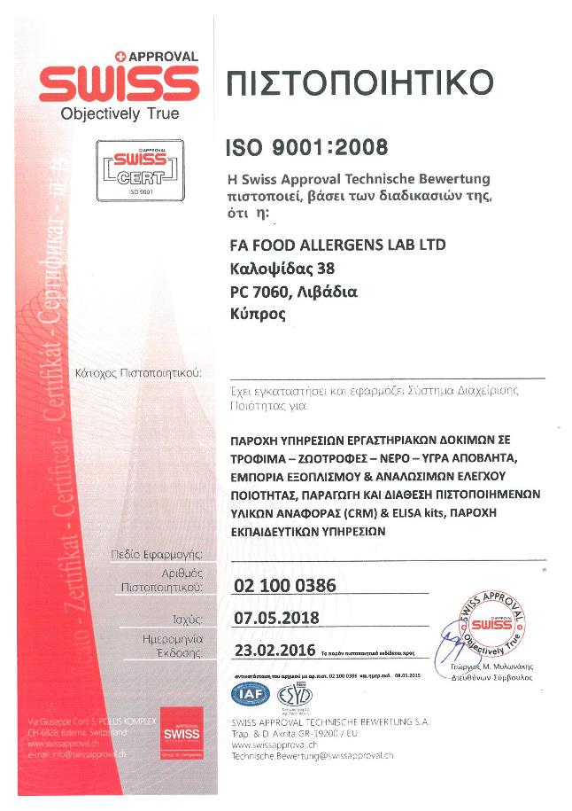
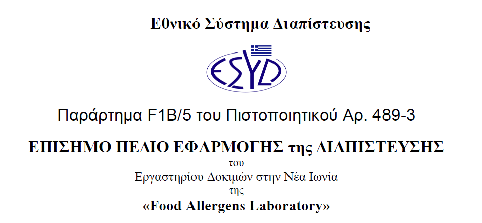
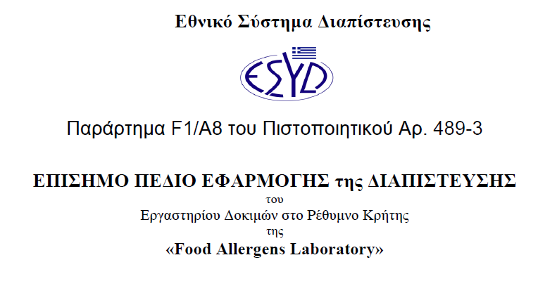
Οι διεργαστηριακοί αυτοί έλεγχοι γίνονται σε συνεργασία με διάφορους κρατικούς, ευρωπαϊκούς και
ερευνητικούς φορείς καθώς και με εξωτερικά εργαστήρια του εξωτερικού. Από την έναρξη λειτουργίας της
επιχείρησης έχουν ολοκληρωθεί περισσότερες από 100 Διεργαστηριακές Συγκριτικές Δοκιμές Ικανότητας
(Δ.Σ.Δ.Ι) με το ποσοστό επιτυχίας τους να κυμαίνεται σε εξαιρετικά υψηλό ποσοστό. Ενδεικτικά μερικές από
τις παραμέτρους που έχουν εξεταστεί είναι (Αλλεργιογόνα, Μυκοτοξίνες, Φυτοφάρμακα, Φθαλικοί Εστέρες,
GMOs, Μέταλλα & Ιχνοστοιχεία, Διαθρεπτικές, Ποιοτικά Χαρακτηριστικά Μελιού & Ελαιολάδου, E.Coli,
Salmonella, Listeria) ενώ μερικοί από τους φορείς διοργάνωσης των δοκιμών είναι (Γ.Χ.Κ., FAPAS, FEPAS,
GEMMA, SCHEMA, LGS standards, ISS, DLA, COI, UNIMA, IMEP-JRC, IRMM, LVUS.de).
http://esyd.gr/portal/p/esyd/el/showOrgInfo.jsp?id=18407
6. ΕΠΙΚΟΙΝΩΝΙΑ
Λίστα εργαστηρίων
Η Food Allergens Laboratory αποτελεί ένα ευρύ δίκτυο εργαστηρίων δοκιμών που καλύπτουν το πλήρες
φάσμα των διενεργούμενων αναλύσεων σε προϊόντα και πρώτες ύλες. Η επιχείρηση δραστηριοποιείται
πλέον στην Ελλάδα (Αθήνα και Ρέθυμνο), την Κύπρο (Λάρνακα) και την Πολωνία (Βαρσοβία).
Προσωπικό & Συνεργάτες σε Ελλάδα, Κύπρο & Πολωνία
Η Food Allergens Laboratory στελεχώνεται από υψηλού επιπέδου προσωπικό με σημαντική
επαγγελματική και επιστημονική εμπειρία σε διάφορους τομείς της αλυσίδας τροφίμων όπως, παραγωγή,
συστήματα διαχείρισης ασφάλειας τροφίμων, διατροφική αξία, νομοθεσία, έρευνα και ανάπτυξη
προϊόντων, με παράλληλη συμμετοχή σε πληθώρα ευρωπαϊκών και κρατικών φορέων όπως (ΕΛΟΤ, ΕΣΥΔ,
ΓΕΤΕΦ, ΤΕΕ, ΜΦΙ, ΓΕΩΤΕΕ, ΕΘΙΑΓΕ, EIE, ΕΚΠΑ, ΓΧΚ, ΓΠΑ, ΕΚΠΟΙΖΩ, CEN, EFSA, BEUC, FOV)
Διεύθυνση:
• Βαρλάμος Ανδρέας, Χημικός Μηχανικός ΕΜΠ, MSc Food Q.A. Reading/UK
[Μέλος επιστημονικών ομάδων εργασίας της ΕFSA (StaCG-Emerging Risks, Chemical Occurrence Data), Τέως
Συμμετέχων ως: Πρόεδρος του Stakeholders Consultative Platform, Εμπειρογνώμων της Ευρωπαϊκής Αρχής
Ασφάλειας Τροφίμων (EFSA), Επιμελητής της Επιστημονικής Επιτροπής Τροφίμων & Βιοτεχνολογίας ΤΕΕ,
Μέλος του Headline Food WG BEUC, της Εθνικής Επιτροπής Διατροφικής Πολιτικής, της Γ.Τ.Ε. Φορέων ΕΣΥΔ,
Τ.Ε. Τροφίμων ΕΛΟΤ και της Επιτροπής YAAT για το ΕΣΔ και τη χρήση φυτοφαρμάκων κ.ά.]
• Σειραγάκης Γιώργος, Χημικός, MSc QA
[Μέλος του CEN/TC275 WG12,TAG3 (ISO για αλλεργιογόνα, παθογόνα), Τέως Συμμετέχων ως: Αξιολογητής
του Εθνικού Συμβουλίου Διαπίστευσης (ΕΣΥΔ), των Ευρωπαϊκών Προγραμμάτων Eurostars, Συντονιστής
της Επιτροπής ΣΕΒΙΤΕΛ στην έκδοση Οδηγού Υγιεινής Ελαιολάδου, Εθνικός Εκπρόσωπος στην ΕΕ
(ορισμένος από το ΣΕΒΤ) προς εφαρμογή της οδηγίας IPPC στη Βιομηχανία Τροφίμων, Reviewer του
διεθνούς επιστημονικού περιοδικού JAOCS, Μέλος του Ανώτατου Χημικού Συμβουλίου, της Γ.Τ.Ε.
Εργαστηρίων ΕΣΥΔ, του ΔΣ του Τμήματος Τροφίμων της ΕΕΧ, της Τ.Ε. Τροφίμων ΕΛΟΤ, κ.ά.]
Τεχνικός Διευθυντής και Επικεφαλής Ερευνητής :
• Δρ. Μηλιάδης Γιώργος, Δρ. Χημικός και ερευνητής Α’, τέως Προϊστάμενος του Εθνικού Εργαστηρίου
Αναφοράς Υπολειμμάτων Γεωργικών Φαρμάκων του Μπενακείου Φυτοπαθολογικού Ινστιτούτου
[Εμπειρογνώμων του Γραφείου Τροφίμων & Κτηνιατρικών (FVO) της Ευρωπαϊκής Επιτροπής,
Αντιπρόεδρος τεχνικής επιτροπής και αξιολογητής του Ε.ΣΥ.Δ. για τα πρότυπα ISO 17025 και ISO 17043,
Διεθνώς αναγνωρισμένος εκπαιδευτής εργαστηρίων σε θέματα προτύπων ποιότητας, αναλυτικών
τεχνικών και επισήμων ελέγχων σε τρόφιμα, Εξουσιοδοτημένος Εκπαιδευτής Χημικής Μετρολογίας
(TrainMic της Ευρωπαϊκής Επιτροπής), Εμπειρογνώμων της Ευρωπαϊκής Αρχής Ασφάλειας Τροφίμων
(ΕFSA), Εμπειρογνώμων του TAIEX της Ευρωπαϊκής Επιτροπής, Κριτής διεθνών επιστημονικών περιοδικών,
Πρόεδρος και μέλος επιστημονικών επιτροπών, με περισσότερες από 190 δημοσιεύσεις σε έγκριτα διεθνή
επιστημονικά περιοδικά και συνέδρια, εισηγήσεις σεμιναρίων, εκδόσεις βιβλίων κ.α]
Βασικό Προσωπικό:
• Αγγελογιαννάκης Γιάννης, Τεχνολόγος Γεωπόνος ΑΤΕΙ Κρήτης
• Agnieszka Ambroziak, Food Engineer – Msc in Nutrition Warsaw University
• Αντωνοπούλου Ίριδα, Οικονομολόγος Παντείου Πανεπιστημίου Αθηνών
• Γαλάνης Νίκος, Γεωπόνος ΓΠΑ – Μ.Sc στη Χημεία Τροφίμων ΕΚΠΑ
• Γαλλιάκη Άννα, Χημικός Πανεπιστημίου Κρήτης
• Γεωργίου Κωνσταντίνα, Γεωπόνος ΤΕΠΑΚ – M.Sc in Molecular Biology CUT
• Ευαγγέλου Βάσω, Διδάκτορας Γεωπόνος ΓΠΑ – M.Sc σε Μοριακές Τεχνικές
• Λαμπιδώνης Αντώνης, Γεωπόνος ΓΠΑ – Μεταδιδακτορικός Ερευνητής Μοριακής Βιολογίας
• Παρασκευαΐδη Κλεοπάτρα, Γεωπόνος ΓΠΑ – M.Sc στην Τεχνολογία Τροφίμων
• Πολίτης Μανώλης, Βιολόγος Πανεπιστημίου Κρήτης – M.Sc στη Μοριακή Βιολογία
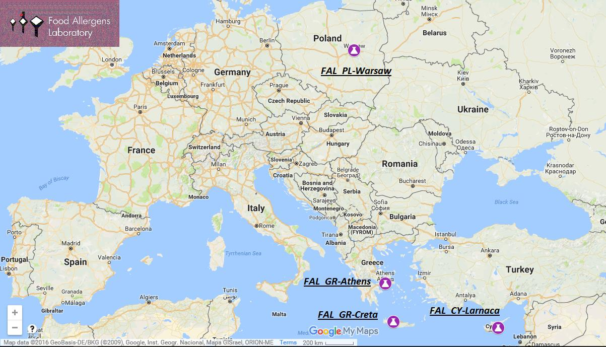
• Σαλασίδης Ελευθεριος, Τεχνολόγος Τροφίμων ΑΤΕΙ Θεσσαλίας
• Σπιθουράκη Φαίη, Τεχνολόγος Γεωπόνος ΑΤΕΙ Πελοποννήσου
• Τσιαντάς Κων/νος, Τεχνολόγος Τροφίμων ΑΤΕΙ Αθηνών
• Τσιάντας Πέτρος, Γεωπόνος ΓΠΑ – M.Sc στις Αναλυτικές Τεχνικές Προσδιορισμού ΥΦΠ
• Τσίντζηρα Παναγιώτα, Λογιστής ΑΤΕΙ Χαλκίδας
• Χριστοδούλου Έλενα, Τεχνολόγος Τροφίμων ΑΤΕΙ Αθηνών
• Χριστοφάκης Μάνος, Χημικός Παν. Κρήτης – M.Sc. in Food Biotechnology Ulster University
Αποτελέσματα Αναλύσεων
Έρευνα & Ανάπτυξη
+30 210 2712498 (1) ή 28310 24423, 6945878194
+30 210 2712498 (2)
Δειγματοληψίες & Διακριβώσεις
Προσφορές & Παραγγελίες
0030 210 27 12 498 (3),
0030 210 27 12 498 (4), 6973375936
Εργαστήριο Χημικών Δοκιμών
Λογιστήριο
0030 210 27 12 498 (5)
0030 210 27 12 498 (6)
Οικονομικό Τμήμα
Νομικό Τμήμα – Ετικέτες κτλ
0030 210 27 12 498 (7)
0030 210 27 12 498 (7), 6977663478
Διοίκηση
0030 210 27 12 498 (8), 6978118047 - 6977663478
Emails: info@foodallergenslab.com, foodallergenslab@gmail.com, sales.foodallergenslab@gmail.com,
research.foodallergenslab@gmail.com, athens.foodallergenslab@gmail.com,
crete.foodallergenslab@gmail.com, cyprus.foodallergenslab@gmail.com, poland.foodallergenslab@gmail.com